library(tidyverse)
library(ggforce)
library(gapminder)
library(ggridges)
library(PASWR)
library(tinter)
library(fmsb)
library(ggalt)
library(cowplot)
library(RColorBrewer)
library(Stat2Data)
library(colorspace)
library(reshape2)
library(devtools)
library(waffle)
library(treemapify)
library(zoo)
library(wordcloud2)
library(tm) #text mining
library(scales)
text_color = "#353d42"
caption_color = "#666666"
font = "Avenir Next"gapminder_dot <- gapminder %>%
filter(year == 2007, continent == "Americas") %>%
dplyr::select(country, lifeExp) %>%
mutate(country = fct_reorder(country, lifeExp),
mean_life = mean(lifeExp),
flag = ifelse(lifeExp - mean_life > 0, TRUE, FALSE))
ggplot(gapminder_dot, aes(x = lifeExp, y = country)) +
geom_segment(
aes(x = 60, xend = lifeExp, y = country, yend = country),
color = "#0072B2",
size = 0.5,
alpha = 0.3
) +
geom_point(
color = "#0072B2",
size = 3) +
scale_x_continuous(
name = "life expectancy (years)",
expand = c(0, 0),
limits = c(59.7, 81.5)) +
scale_y_discrete(
name = NULL,
expand = c(0, 0.5)) +
labs(
caption = "Source: gapminder",
title = "Life expectancy of American countries in 2007") +
theme(
axis.ticks = element_blank(),
axis.text = element_text(family = font, size = 11, color = text_color),
panel.background = element_blank(),
panel.grid.major = element_line(color = "#cbcbcb", size = 0.1),
plot.margin = margin(18, 6, 3, 1.5),
axis.title.x = element_text(family = font, size = 11, color = text_color, margin = margin (t = 10)),
plot.title = element_text(family = font, color = text_color, size = 15, face = "bold", margin = margin(b = 20)),
plot.caption = element_text(family = font, color = caption_color, size = 9, hjust = 0, vjust = 2))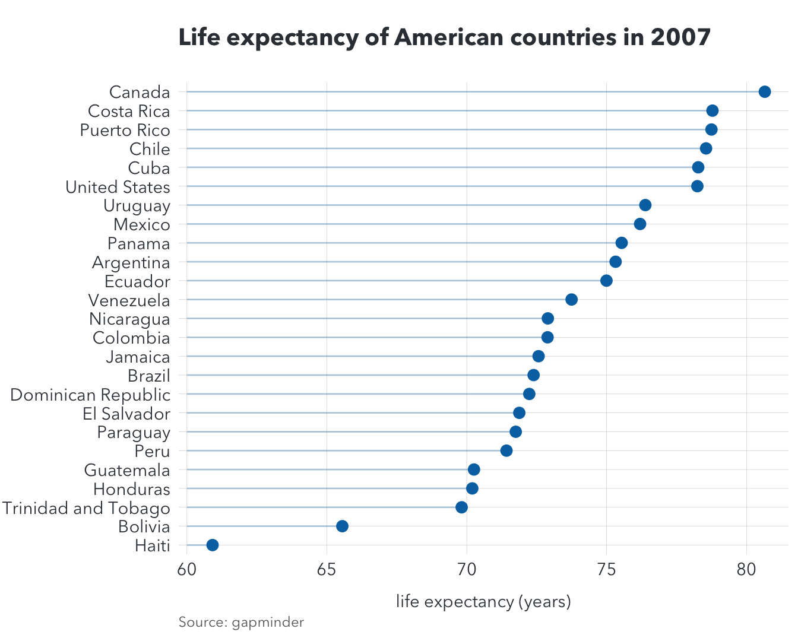
ggplot(gapminder_dot, aes(x = lifeExp, y = country, color = flag)) +
geom_segment(
aes(x = mean_life , xend = lifeExp, y = country, yend = country),
size = 0.5,
alpha = 0.3
) +
geom_point(
size = 3) +
ggplot2::annotate("text", x = 81, y = 14.5,
label = "Above average",
family = font,
color = text_color,
size = 3) +
ggplot2::annotate("text", x = 69, y = 10,
label = "Below average",
family = font,
color = text_color,
size = 3) +
geom_curve(aes(x = 69, xend = 71, y = 9, yend = 7),
color = text_color,
size = 0.1,
arrow = arrow(length = unit(0.01, "npc"))) +
geom_curve(aes(x = 81, xend = 79, y = 15, yend = 17),
color = text_color,
size = 0.1,
arrow = arrow(length = unit(0.01, "npc"))) +
scale_x_continuous(
name = "life expectancy (years)",
expand = c(0, 0),
limits = c(59.7, 85)) +
scale_y_discrete(
name = NULL,
expand = c(0, 0.5)) +
scale_color_manual(
values = c("#D55E00", "#0072B2")
) +
labs(
caption = "Source: gapminder",
title = "Life expectancy of American countries in 2007") +
theme(
axis.ticks = element_blank(),
axis.text = element_text(family = font, size = 11, color = text_color),
panel.background = element_blank(),
panel.grid.major = element_line(color = "#cbcbcb", size = 0.1),
plot.margin = margin(18, 6, 3, 1.5),
axis.title.x = element_text(family = font, size = 11, color = text_color, margin = margin (t = 10)),
legend.position = "none",
plot.title = element_text(family = font, color = text_color, size = 15, face = "bold", margin = margin(b = 20)),
plot.caption = element_text(family = font, color = caption_color, size = 9, hjust = 0, vjust = 2))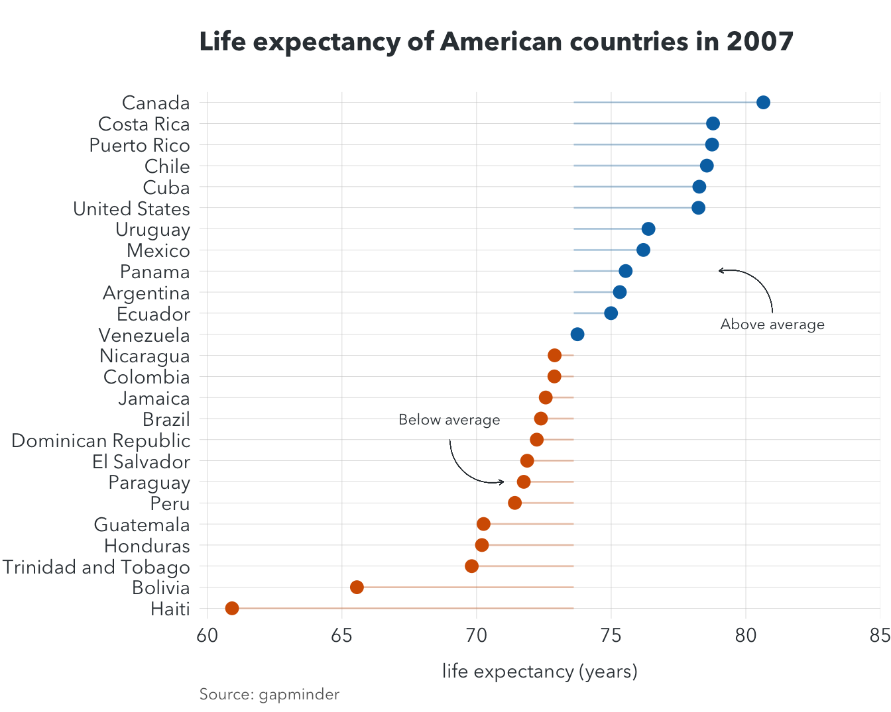
gapminder_dot_1 <- gapminder %>%
filter(year %in% c(1987, 2007), continent == "Americas") %>%
dplyr::select(year, country, lifeExp) %>%
mutate(country = fct_reorder(country, lifeExp)) %>%
spread(year, lifeExp)
ggplot(gapminder_dot_1) +
geom_segment(
aes(x = `1987`, xend = `2007`, y = country, yend = country),
color = "black",
alpha = 0.3
) +
geom_point(
aes(x = `1987`, y = country),
color = "#D55E00",
size = 2) +
geom_point(
aes(x = `2007`, y = country),
color = "#0072B2",
size = 2) +
scale_x_continuous(
name = "life expectancy (years)",
expand = c(0, 0),
limits = c(52, 81.5)) +
scale_y_discrete(
name = NULL,
expand = c(0, 0.5)) +
labs(
caption = "Source: gapminder",
title = "Life expectancy of American countries 1987 - 2007") +
theme(
axis.ticks = element_blank(),
axis.text = element_text(family = font, size = 11, color = text_color),
panel.background = element_blank(),
panel.grid.major = element_line(color = "#cbcbcb", size = 0.1),
plot.margin = margin(18, 6, 3, 1.5),
axis.title.x = element_text(family = font, size = 11, color = text_color, margin = margin (t = 10)),
plot.title = element_text(family = font, color = text_color, size = 15, face = "bold", margin = margin(b = 20)),
plot.caption = element_text(family = font, color = caption_color, size = 9, hjust = 0, vjust = 2))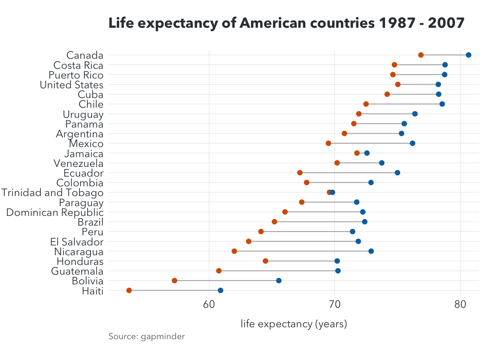
# Another method use geom_dumbbell from library ggalt
dumbbell_df <- gapminder %>%
filter(year == 1967 | year == 2007) %>%
dplyr::select(country, year, lifeExp) %>%
spread(year, lifeExp) %>%
mutate(gap = `2007` - `1967`) %>%
arrange(desc(gap)) %>%
head(10)
#Make plot
method2 <- ggplot(dumbbell_df, aes(x = `1967`, xend = `2007`, y = reorder(country, gap), group = country)) +
geom_dumbbell(colour = "#dddddd",
size = 3,
colour_x = "#FAAB18",
colour_xend = "#1380A1") +
labs(title="Life expectancy rise in 10 countries, 1967-2007 ",
subtitle="We are living longer",
caption = "Source: gapminder") +
theme(
panel.background = element_blank(),
panel.grid.major.y = element_line(color = "#d9dbda", size = 0.4),
axis.ticks = element_blank(),
axis.text = element_text(family = font, size = 11, color = text_color),
axis.title = element_blank(),
plot.title = element_text(family = font, size = 15, color = text_color, face = "bold"),
plot.subtitle = element_text(family = font, size = 11, color = text_color),
plot.caption = element_text(family = font, size = 10, color = caption_color, hjust = 0, margin = margin(t = 10))
)exam_scores <- data.frame(
row.names = c("Student.1", "Student.2", "Student.3"),
Biology = c(7.9, 3.9, 9.4),
Physics = c(10, 20, 0),
Maths = c(3.7, 11.5, 2.5),
Sport = c(8.7, 20, 4),
English = c(7.9, 7.2, 12.4),
Geography = c(6.4, 10.5, 6.5),
Art = c(2.4, 0.2, 9.8),
Programming = c(0, 0, 20),
Music = c(20, 20, 20)
)
# To use the fmsb package, the data should be organized as follow:
# - row 1 contains maximum values for each variable
# - row 2 contains minimum values for each variable
# - data for cases or individuals start from row 3
# - number of columns must be more than 2
max_min <- data.frame(
Biology = c(20, 0), Physics = c(20, 0), Maths = c(20, 0),
Sport = c(20, 0), English = c(20, 0), Geography = c(20, 0),
Art = c(20, 0), Programming = c(20, 0), Music = c(20, 0)
)
rownames(max_min) <- c("Max", "Min")
# Bind the variable ranges to the data
df <- rbind(max_min, exam_scores)
# rada chart of student 1
student1_data <- df[c("Max", "Min", "Student.1"), ]
radarchart(student1_data,
axistype = 1,
# Customize the polygon
pcol = "#1b9e77", #color of the line
pfcol = scales::alpha("#1b9e77", 0.5), # filling color
plwd = 1.5, # line width
# Customize the grid
cglcol = "#cbcbcb", #color
cglwd = 0.9, #line width
cglty = 3,
axislabcol = "#cbcbcb",
title = "Student A score report",
vlabels = colnames(student1_data),
vlcex = 0.7,
caxislabels = c(0, 5, 10, 15, 20)
)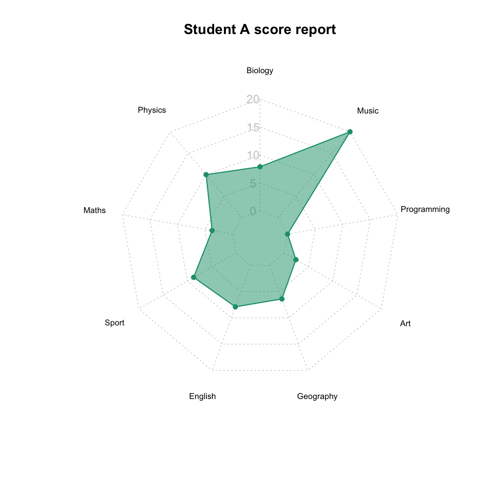
# rada chart of student 1
radarchart(df,
axistype = 1,
# Customize the polygon
pcol = c("#e41a1c", "#377eb8", "#4daf4a"), #color of the line
pfcol = scales::alpha(c("#e41a1c", "#377eb8", "#4daf4a"), 0.6), # filling color
plwd = c(1.5, 1.5, 1.5), # line width
plty = c(1, 1, 1),
# Customize the grid
cglcol = "#cbcbcb", #color
cglwd = 0.9, #line width
cglty = 3,
axislabcol = "#cbcbcb",
title = "Score report of three students ",
vlabels = colnames(student1_data),
vlcex = 0.7,
caxislabels = c(0, 5, 10, 15, 20)
)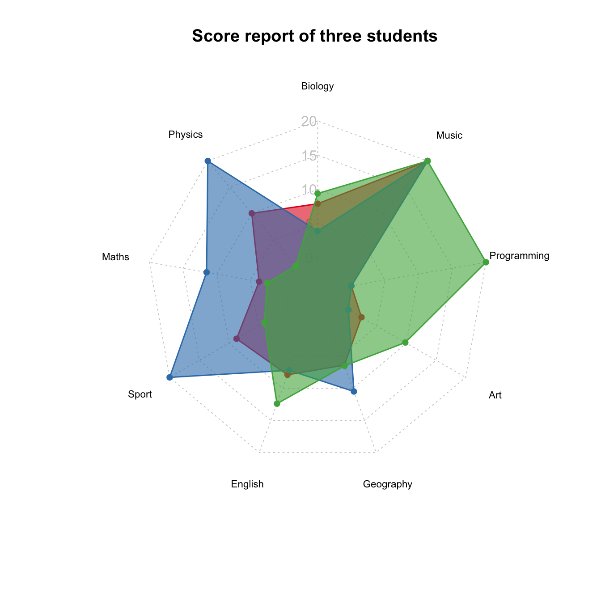
# Define colors and titles
colors <- c("#00AFBB", "#E7B800", "#FC4E07")
titles <- c("Student A", "Student B", "Student C")
# Reduce plot margin using par()
# Split the screen in 3 parts
par(mfrow = c(1,3))
# Create the radar chart
for(i in 1:3){
radarchart(df[c(1, 2, i+2), ],
axistype = 1,
# Customize the polygon
pcol = colors[i], #color of the line
pfcol = scales::alpha(colors[i], 0.5), # filling color
plwd = 1.5, # line width
# Customize the grid
cglcol = "#cbcbcb", #color
cglwd = 0.9, #line width
cglty = 3,
axislabcol = "#cbcbcb",
title = titles[i],
vlabels = colnames(df[c(1, 2, i+2), ]),
vlcex = 0.7,
caxislabels = c(0, 5, 10, 15, 20)
)
}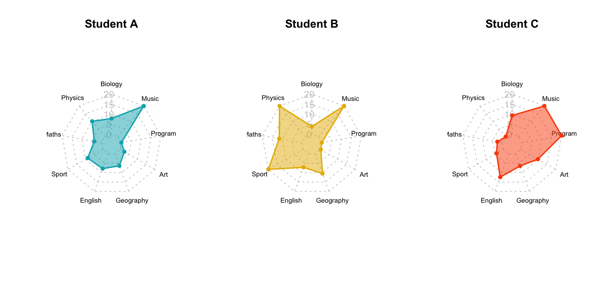 ### Compared with the average
set.seed(123)
df <- as.data.frame(
matrix(sample(2:20 , 90 , replace = TRUE),
ncol=9, byrow = TRUE)
)
colnames(df) <- c(
"Biology", "Physics", "Maths", "Sport", "English",
"Geography", "Art", "Programming", "Music"
)
rownames(df) <- paste0("Student.", 1:nrow(df))
# Rescale each variable to range between 0 and 1
df_scaled <- round(apply(df, 2, scales::rescale), 2)
df_scaled <- as.data.frame(df_scaled)
#Prepare data
# Variables summary
# Get the minimum and the max of every column
col_max <- apply(df_scaled, 2, max)
col_min <- apply(df_scaled, 2, min)
# Calculate the average profile
col_mean <- apply(df_scaled, 2, mean)
# Put together the summary of columns
col_summary <- t(data.frame(Max = col_max, Min = col_min, Average = col_mean))
# Bind variables summary to the data
df_scaled2 <- as.data.frame(rbind(col_summary, df_scaled))
opar <- par()
# Define settings for plotting in a 3x4 grid, with appropriate margins:
par(mar = rep(0.8,4))
par(mfrow = c(3,4))
# Produce a radar-chart for each student
for (i in 4:nrow(df_scaled2)) {
radarchart(
df_scaled2[c(1:3, i), ],
pfcol = c("#99999980",NA),
pcol= c(NA,2), plty = 1, plwd = 2,
title = row.names(df_scaled2)[i]
)
}
# Restore the standard par() settings
par <- par(opar) 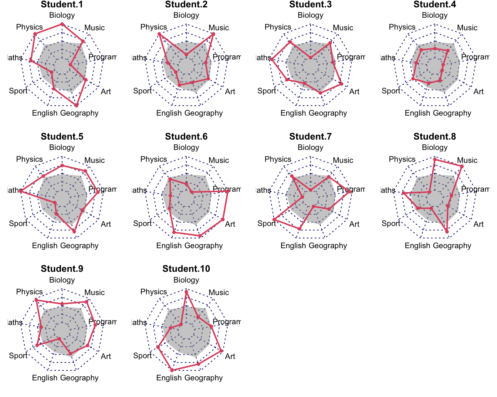
boxoffice <- data.frame(rank = 1:5,
title = c("Star Wars: The Last Jedi", "Jumanji: Welcome to the Jungle", "Pitch Perfect 3", "The Greatest Showman", "Ferdinand"),
title_short = c("Star Wars", "Jumanji", "Pitch Perfect 3", "Greatest Showman", "Ferdinand"),
amount = c(71565498, 36169328, 19928525, 8805843, 7316746),
amount_text = c("$71,565,498", "$36,169,328", "$19,928,525", "$8,805,843", "$7,316,746"))
ggplot(boxoffice, aes(x = fct_reorder(title_short, rank), y = amount)) +
geom_col(
fill = "#56B4E9",
width = 0.6,
alpha = 0.9)+
scale_y_continuous(
expand = c(0,0),
breaks = c(0, 2e7, 4e7, 6e7),
labels = c("0", "20", "40", "60"),
name = "Weekend gross (million USD)") +
scale_x_discrete(
name = NULL,
expand = c(0, 0.4)) +
coord_cartesian(clip = "off") +
labs(
caption = "Source: Box Office Mojo",
title = "Highest grossing movies for 22-24.12.2017") +
theme(
axis.ticks = element_blank(),
axis.text = element_text(family = font, color = text_color, size = 11),
axis.title.y = element_text(family = font, color = text_color, size = 11, margin = margin(r = 20)),
panel.background = element_blank(),
panel.grid.major.y = element_line(color = "#cbcbcb", size = 0.5),
plot.title = element_text(family = font, size = 15, color = text_color, face = "bold", margin = margin(b = 10), hjust = 0),
plot.caption = element_text(family = font, size = 10, color = caption_color, margin = margin(t = 15), hjust = 0)
)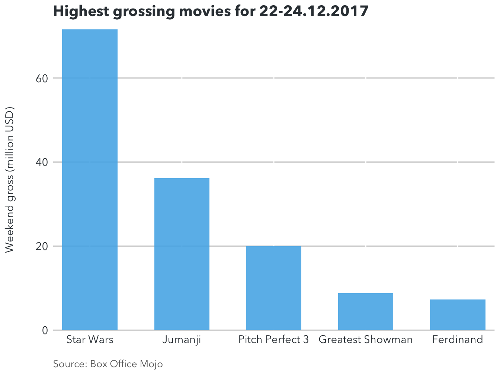
ggplot(boxoffice, aes(x = fct_reorder(title_short, desc(rank)), y = amount)) +
geom_col(
fill = "#56B4E9",
alpha = 0.9)+
scale_y_continuous(
expand = c(0,0),
breaks = c(0, 2e7, 4e7, 6e7),
labels = c("0", "20", "40", "60"),
name = "Weekend gross (million USD)") +
scale_x_discrete(name = NULL) +
coord_cartesian(clip = "off") +
labs(
title = "Highest grossing movies for 22-24.12.2017",
caption = "Source: Box Office Mojo") +
coord_flip() +
theme(
axis.ticks = element_blank(),
axis.text = element_text(family = font, color = text_color, size = 11),
axis.text.x = element_text(vjust = 1, hjust = 1),
axis.title = element_text(family = font, color = text_color, size = 11),
panel.background = element_blank(),
panel.grid.major.y = element_line(color = "#cbcbcb", size = 0.5),
plot.title = element_text(family = font, size = 15, color = text_color, face = "bold", margin = margin(b = 10), vjust = -2),
plot.caption = element_text(family = font, size = 10, color = caption_color, hjust = 0)
)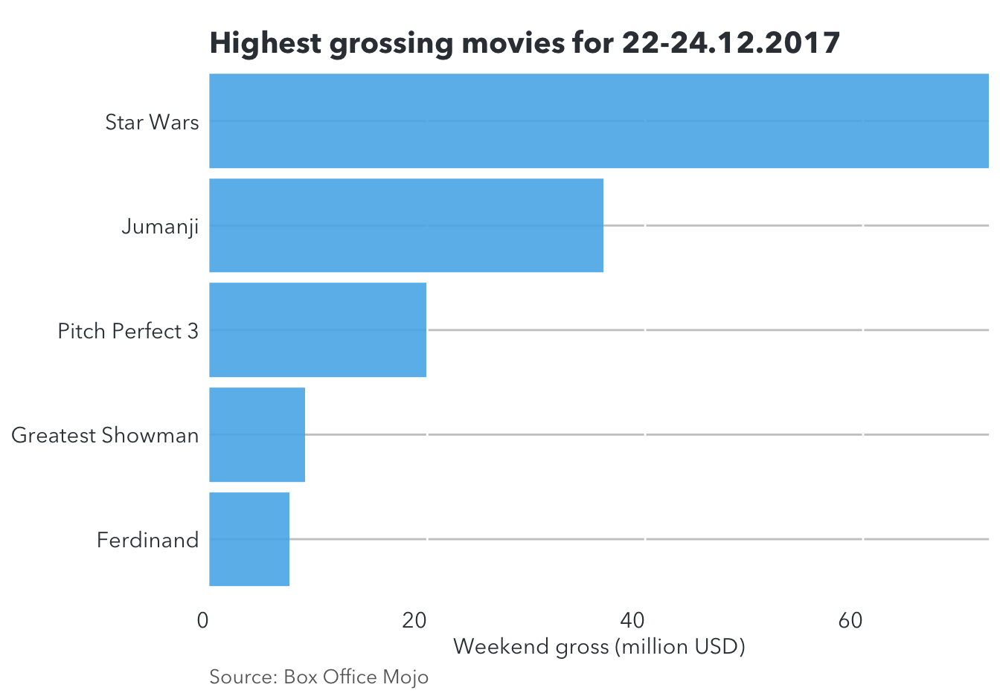
diamonds_by_color_cut <-
diamonds %>%
group_by(color, cut) %>%
summarize(average_price = mean(price))
color_five = RColorBrewer::brewer.pal(n = 9, "BuGn")[4:8] #Get 5 color from the scale
#Focus on price differences between each color group
ggplot(diamonds_by_color_cut, aes(x = color, y = average_price, fill = cut)) +
geom_col(position = "dodge", alpha = 0.9) +
scale_y_continuous(
expand = c(0, 0),
name = "Average price (USD)",
breaks = c(1000, 2000, 3000, 4000, 5000, 6000),
labels = c("1,000", "2,000","3,000","4,000","5,000","6,000")) +
scale_fill_manual(values = color_five, name = NULL) +
coord_cartesian(clip = "off") +
labs(
title = "Prices of 50,000 diamonds versus cut quality and color",
caption = "Source: diamonds - ggplot2") +
xlab("Color") +
theme(
panel.background = element_blank(),
panel.grid.major.y = element_line(color = "#cbcbcb", size = 0.5),
axis.ticks = element_blank(),
axis.text = element_text(family = font, color = text_color, size = 11),
axis.title = element_text(family = font, color = text_color, size = 11),
axis.title.x = element_text(margin = margin(t = 8)),
axis.title.y = element_text(margin = margin(r = 8)),
plot.caption = element_text(family = font, size = 10, color = text_color, hjust = 0),
plot.title = element_text(family = font, size = 15, color = text_color, face = "bold"),
legend.text = element_text(family = font, color = text_color, size = 8)
)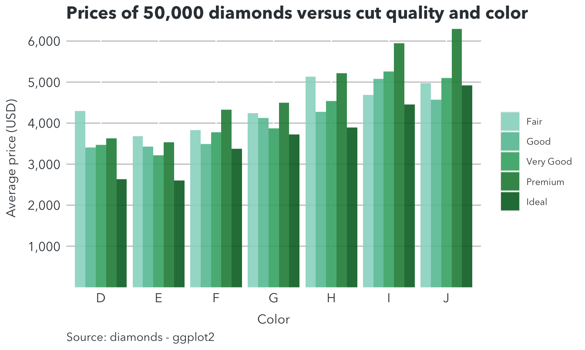
titanic = read.csv("/Users/huvi/Desktop/datasets/titanic.csv")
titanic_stacked <- titanic %>%
group_by(Pclass, Sex) %>%
tally() %>%
arrange(Pclass, desc(Sex))%>%
mutate(Sex = factor(Sex, levels = c("female", "male"))) %>%
group_by(Pclass) %>%
mutate(nlabel = cumsum(n) - n/2, Pclass = paste(Pclass, "class"))
ggplot(titanic_stacked, aes(x = Pclass, y = n, fill = Sex)) +
geom_col(position = "stack", color = "white", size = 1, width = 1) +
geom_text(aes(y = nlabel, label = n), color = "white", size = 6, family = font) +
labs( title = "Numbers of passengers on the Titanic based on gender and class",
caption = "Source: Encyclopedia Titanica") +
scale_x_discrete(expand = c(0,0), name = NULL) +
scale_y_continuous(expand = c(0,0), name = NULL, breaks = NULL) +
coord_cartesian(clip = "off") +
scale_fill_manual(values = c("#D55E00", "#0072B2"),
breaks = c("female", "male"),
labels = c("male passengers", "female passengers"),
name = NULL) +
theme(panel.background = element_blank(),
axis.text = element_text(family = font, color = text_color, size = 11),
axis.text.x = element_text(margin = margin(t = 15)),
legend.text = element_text(family = font, color = text_color, size = 11),
legend.position = "bottom",
legend.justification = "center",
legend.spacing.x = grid::unit(7, "pt"),
legend.spacing.y = grid::unit(0, "cm"),
plot.title = element_text(family = font, size = 15, color = text_color, face = "bold", margin = margin(b = 30)),
plot.caption = element_text(family = font, size = 10, color = text_color, hjust = 0))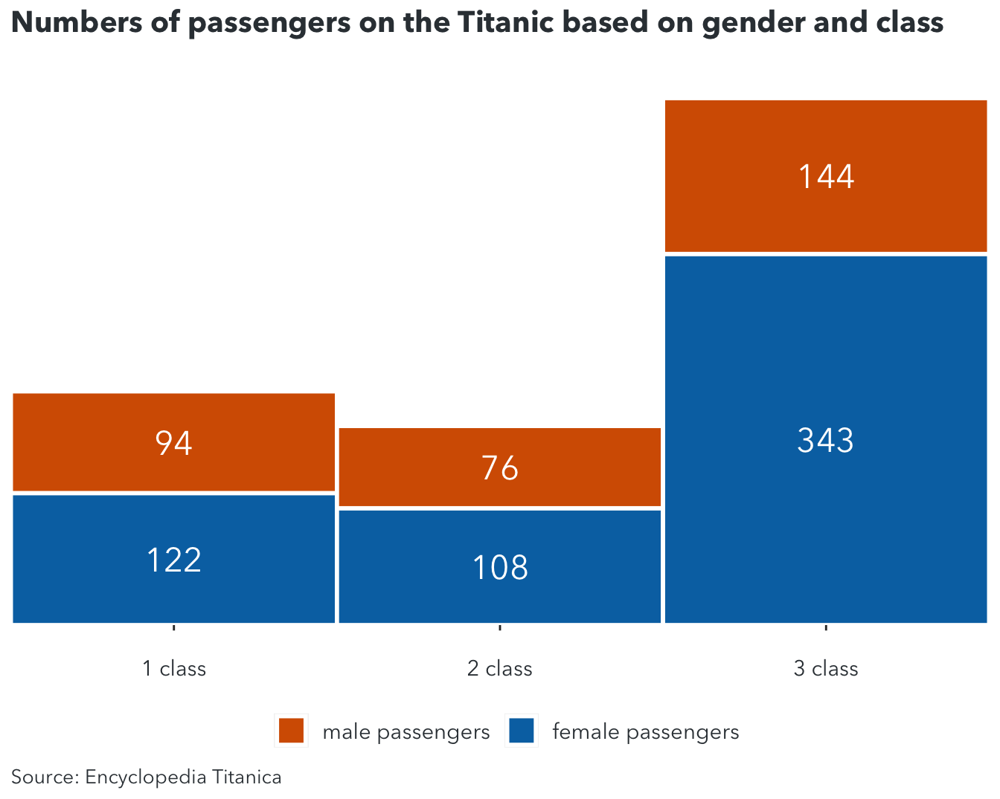
country_list = c("United States", "China", "India", "Japan", "Vietnam", "Brazil", "Germany", "France", "United Kingdom", "Italy", "New Zealand", "Canada", "Mexico", "Chile", "Argentina", "Norway", "South Africa", "Myanmar", "Israel", "Iceland")
internet <- read.csv("/Users/huvi/Desktop/datasets/Individuals.using.the.Internet.%.population.World.Bank.csv")
internet_short <- internet %>%
dplyr::select(Country = Country.Name, Time, Users = Individuals.using.the.Internet....of.population...IT.NET.USER.ZS.) %>%
filter(Country %in% country_list) %>%
mutate(Users = ifelse(is.na(Users), 0, Users))
internet_summary <- internet_short %>%
group_by(Country) %>%
summarize(Time1 = min(Time[Users > 0]),
Last = Users[n()]) %>%
arrange(Last, desc(Time1))
internet_short <- internet_short %>%
mutate(Country = factor(Country, levels = internet_summary$Country),
Users = as.numeric(Users))
ggplot(internet_short, aes(x = Time, y = Country, fill = Users)) +
geom_tile(color = "white", size = 0.3) + #Color of border between tiles and size of the color
scale_x_continuous(expand = c(0, 0), name = NULL) +
scale_y_discrete(name = NULL, position = "right")+
scale_fill_viridis_c(
option = "A", begin = 0.05, end = 0.98,
limits = c(0,100), #Set limit on the legend
name = "internet users / 100 people",
guide = guide_colorbar(
direction = "horizontal",
label.position = "bottom",
title.position = "top",
barwidth = grid::unit(2.5, "in"),
barheight = grid::unit(0.2, "in"),
ticks = FALSE)) +
labs(
caption = "Source: World Bank",
title = "Percentage of internet users in 20 countries between 1999 and 2019") +
theme(
panel.background = element_blank(),
axis.line = element_blank(),
axis.ticks.length = grid::unit(1, "pt"),
axis.ticks = element_blank(),
legend.position = "bottom",
legend.justification = "right",
legend.title = element_text(family = font, color = text_color, size = 11),
legend.title.align = 0.5,
legend.box.spacing = unit(0, "pt"),
legend.text = element_text(family = font, color = text_color, size = 9),
axis.text = element_text(family = font, color = text_color, size = 11),
plot.title = element_text(family = font, color = text_color, size = 13, face = "bold", hjust = 0, margin = margin(b = 10)),
plot.caption = element_text(family = font, color = caption_color, size = 9, hjust = 0))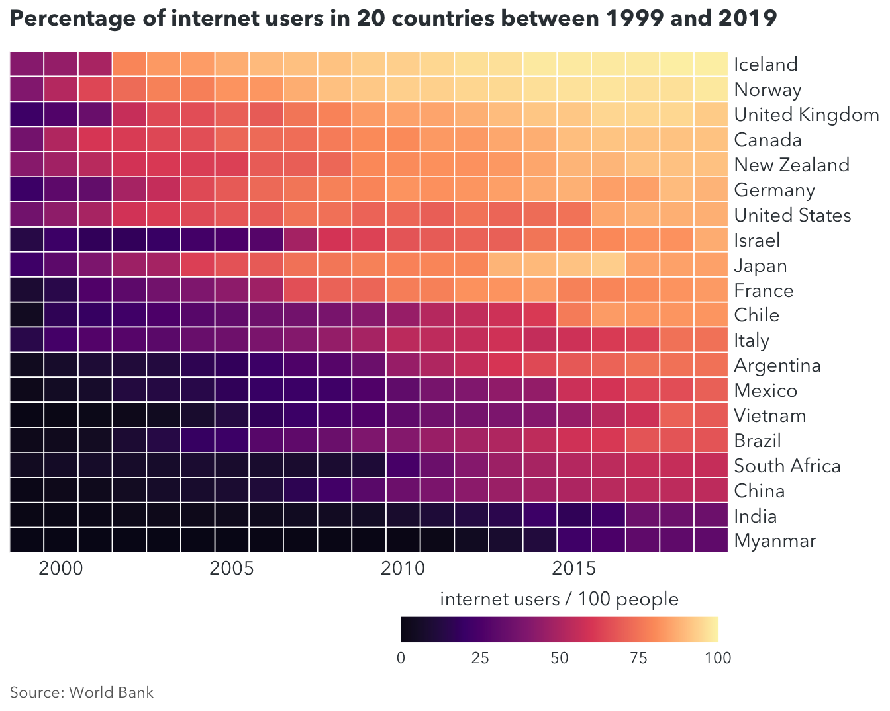
# Read the text
HP <- readLines("/Users/huvi/Desktop/datasets/HP_Part1_Text.txt")
# Load as a corpus (a list of document, only 1 in this case)
docs <- Corpus(VectorSource(HP))
toSpace <- content_transformer(function (x , pattern ) gsub(pattern, " ", x))
#docs <- tm_map(docs, toSpace, "/")
#docs <- tm_map(docs, toSpace, "@")
#docs <- tm_map(docs, toSpace, "—")
# Convert the text to lower case
docs <- tm_map(docs, content_transformer(tolower))
# Remove numbers
docs <- tm_map(docs, removeNumbers)
# Remove english common stopwords
docs <- tm_map(docs, removeWords, stopwords("english"))
# Remove your own stop word
# specify your stopwords as a character vector
docs <- tm_map(docs, removeWords, c("blabla1", "blabla2"))
# Remove punctuations
docs <- tm_map(docs, removePunctuation)
# Eliminate extra white spaces
docs <- tm_map(docs, stripWhitespace)
# Text stemming
# docs <- tm_map(docs, stemDocument)
dtm <- TermDocumentMatrix(docs)
m <- as.matrix(dtm)
v <- sort(rowSums(m),decreasing=TRUE)
d <- data.frame(word = names(v),freq=v)
d <- d[-c(2,4,11,15,28,34,42,43),]
wordcloud2(data = d,
size = 1.5,
color = "random-dark",
fontFamily = font)titanic = read.csv("/Users/huvi/Desktop/datasets/titanic.csv")
age_counts <- hist(titanic$Age, breaks = (0:16) * 5 + .01, plot = FALSE)$counts
age_hist <- data.frame(
"Age_range" = c(c("0--5", "6--10", "11--15", "16--20", "21--25", "26--30", "31--35", "36--40", "41--45", "46--50", "51--55", "56--60", "61--65", "66--70", "71--75"), "76--80"),
Count = age_counts,
check.names = FALSE
)
age_hist = cbind(age_hist, age = (1:16) * 5 - 2.5)
ggplot(age_hist, aes(x = age, y = Count )) +
geom_col(width = 4.7, fill = "#56B4E9") +
scale_y_continuous(expand = c(0,0), breaks = 25 * (0:6)) +
scale_x_continuous(expand = c(0,0), name = "age(years)", limits = c(0,80), breaks = seq(0, 80, 10))+
coord_cartesian(clip = "off") +
labs(
caption = "Source: Encyclopedia Titanica",
title = "Number of passengers with known age on the Titanic") +
theme(
panel.background = element_blank(),
panel.grid.major.y = element_line(color = "#cbcbcb", size = 0.5),
axis.ticks = element_blank(),
axis.text = element_text(family = font, color = text_color, size = 11),
axis.title = element_text(family = font, color = text_color, size = 11),
plot.title = element_text(family = font, size = 13, color = text_color, face = "bold", margin = margin(b = 10)),
plot.caption = element_text(family = font, size = 10, color = caption_color, hjust = 0)
)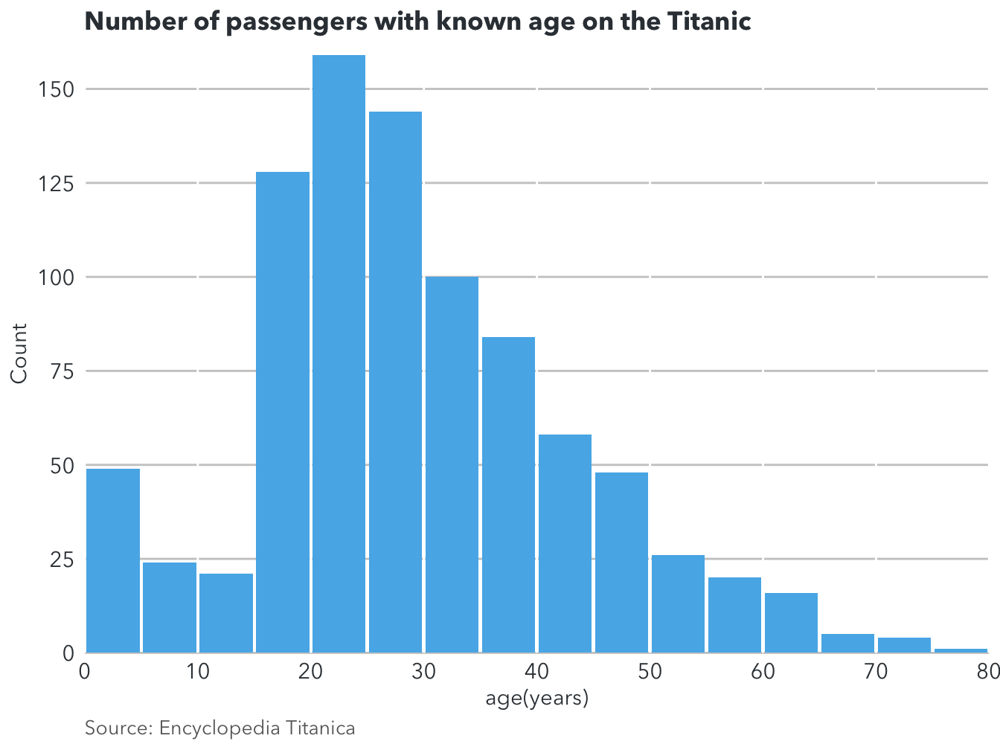
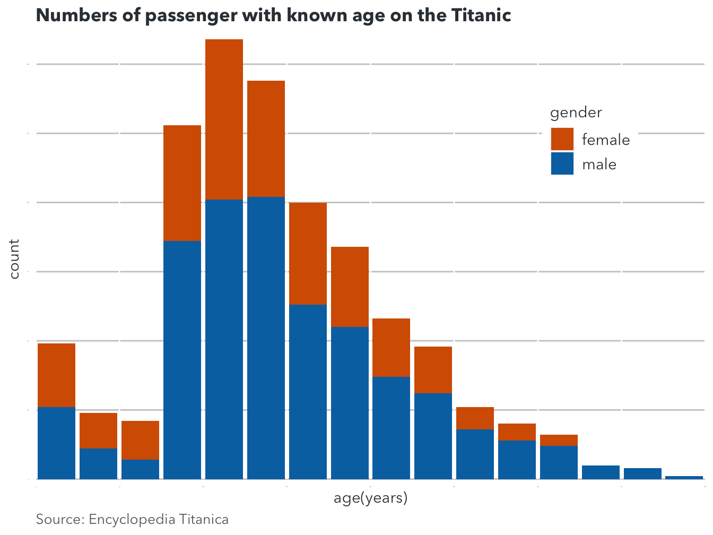
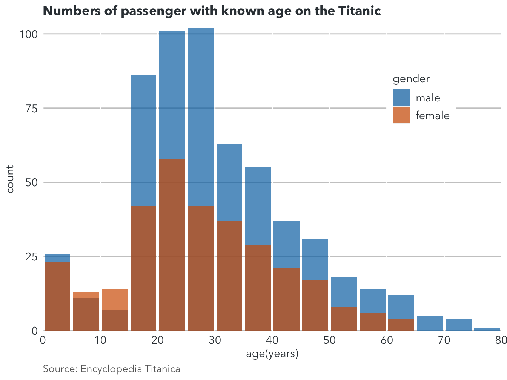
ggplot(gender_counts, aes(x = age, y = ifelse(gender == "male", -1, 1)*count, fill = gender)) +
geom_col() +
scale_y_continuous(
expand = c(0,0),
breaks = 20 * (-5:3),
name = "count",
labels = c("100","80","60","40","20","0","20","40","60")) +
scale_x_continuous(expand = c(0,0), name = "age(years)", limits = c(0,83), breaks = seq(0, 80, 20))+
coord_flip() +
scale_fill_manual(
values = c("#D55E00", "#0072B2"),
guide = "none") +
labs(
caption = "Source: Encyclopedia Titanica",
title = "Numbers of passenger with known age on the Titanic") +
draw_text(x = 70, y = -39, "male", hjust = 0, size = 11, family = font, color = text_color) +
draw_text(x = 70, y = 21, "female", hjust = 0, size = 11, family = font, color = text_color) +
theme(
panel.background = element_blank(),
panel.grid.major = element_line(color = "#cbcbcb", size = 0.2),
axis.ticks = element_blank(),
axis.text = element_text(family = font, color = text_color, size = 11),
axis.title = element_text(family = font, color = text_color, size = 11),
plot.title = element_text(family = font, size = 13, color = text_color, face = "bold", margin = margin(b = 10)),
plot.caption = element_text(family = font, size = 10, color = caption_color, hjust = 0))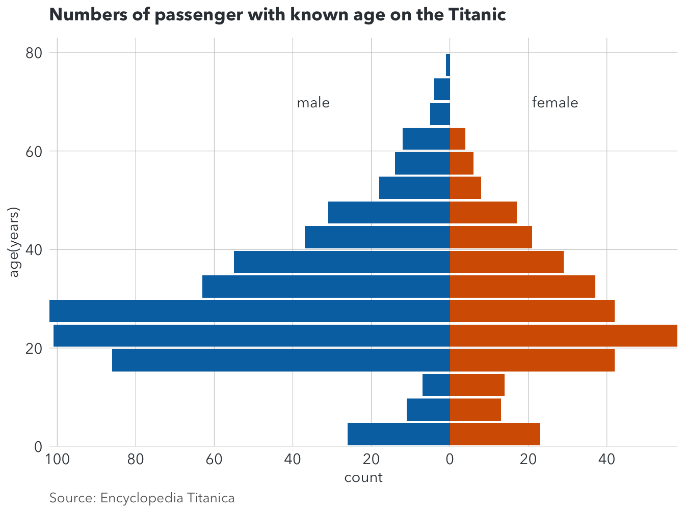
ggplot(titanic, aes(x = Age)) +
geom_density_line(fill = "#56B4E9", color = "darkblue", alpha = 0.9, bw = 2, kernel = "gaussian") +
scale_y_continuous(
expand = c(0,0),
limits = c(0, 0.045),
name = "density") +
scale_x_continuous(
expand = c(0,0),
limits = c(0,80),
name = "age (years)") +
coord_cartesian(clip = "off") +
labs(
caption = "Source: Encyclopedia Titanica",
title = "Age distribution of passengers on the Titanic") +
theme(
panel.background = element_blank(),
panel.grid.major.y = element_line(color = "#cbcbcb", size = 0.5),
axis.ticks = element_blank(),
axis.text = element_text(family = font, color = text_color, size = 10),
axis.title = element_text(family = font, color = text_color, size = 11),
plot.title = element_text(family = font, size = 13, color = text_color, face = "bold", margin = margin(t = 20)),
plot.caption = element_text(family = font, size = 10, color = caption_color, hjust = 0)
)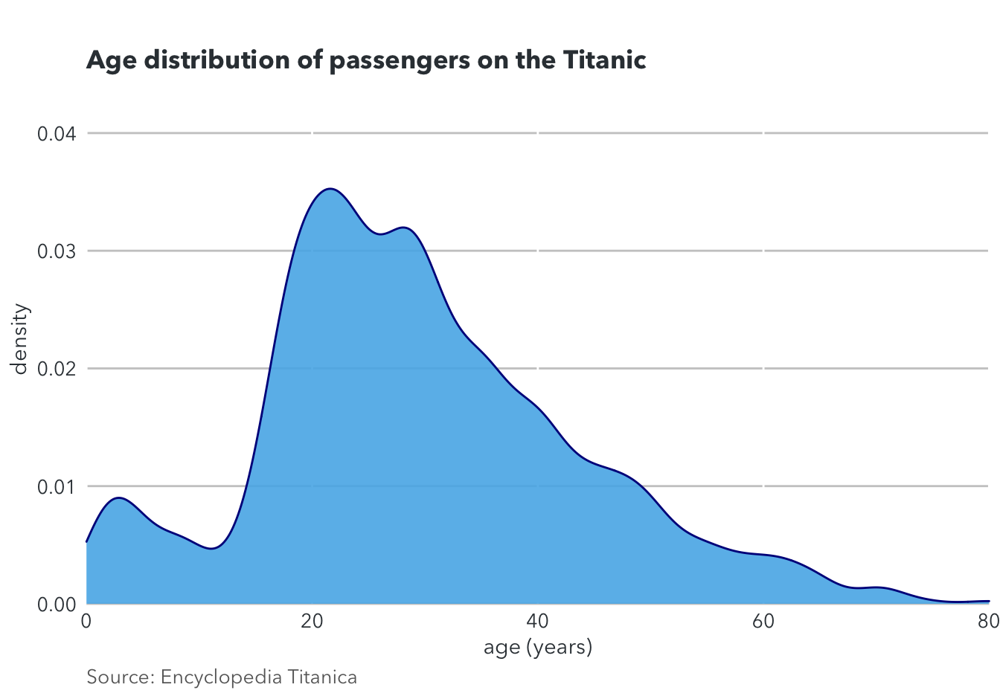
titanic2 <- titanic
titanic2$Sex <- factor(titanic2$Sex, levels = c("female", "male"))
ggplot(titanic2, aes(x = Age, y = ..count.., fill = Sex, color = Sex)) +
geom_density_line(alpha = 0.6, bw = 2) +
scale_y_continuous(
expand = c(0,0),
limits = c(0, 22),
name = "scaled density") +
scale_x_continuous(
expand = c(0,0),
limits = c(0,80),
name = "age (years)") +
scale_fill_manual(values = c("#0072B2", "#D55E00"), name = "gender") +
scale_color_manual(values = c("darkblue","darkorange"), name = "gender")+
guides(fill = guide_legend(override.aes = list(linetype = 0))) +
coord_cartesian(clip = "off") +
labs(
caption = "Source: Encyclopedia Titanica",
title = "Age distribution of passengers on the Titanic") +
theme(
panel.background = element_blank(),
panel.grid.major.y = element_line(color = "#cbcbcb", size = 0.5),
axis.ticks = element_blank(),
axis.text = element_text(family = font, color = text_color, size = 11),
axis.title = element_text(family = font, color = text_color, size = 11),
plot.title = element_text(family = font, size = 13, color = text_color, face = "bold", margin = margin(b = 20)),
plot.caption = element_text(family = font, size = 10, color = text_color, hjust = 0),
legend.position = c(0.9, 0.8),
legend.justification = c("right", "top"),
legend.text = element_text(family = font, color = text_color, size = 11),
legend.title = element_text(family = font, color = text_color, size = 11)
)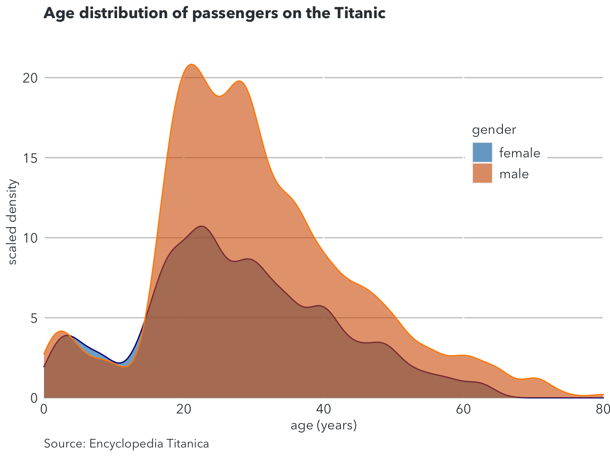
ggplot(titanic2, aes(x = Age, y = ..count..)) +
geom_density_line(
data = dplyr::select(titanic, -Sex),
aes(fill = "all passengers"),
color = "transparent") +
geom_density_line(
aes(fill = Sex),
bw = 2,
color = "transparent") +
scale_y_continuous(
expand = c(0,0),
limits = c(0, 30),
name = "scaled density") +
scale_x_continuous(
expand = c(0,0),
limits = c(0,80),
name = "age (years)") +
scale_fill_manual(
values = c("#b3b3b3a0", "#0072B2", "#D55E00"),
breaks = c("all passengers", "male", "female"),
labels = c("all passeengers", "males", "females"),
name = NULL,
guide = guide_legend(direction = "horizontal")
) +
coord_cartesian(clip = "off") +
facet_wrap(~Sex, labeller = labeller(Sex = function(Sex) paste(Sex, "passengers"))) +
labs(
caption = "Source: Encyclopedia Titanica",
title = "Age distribution of passengers on the Titanic") +
theme(
panel.background = element_blank(),
panel.grid.major.y = element_line(color = "#cbcbcb", size = 0.5),
axis.ticks = element_blank(),
axis.text = element_text(family = font, color = text_color, size = 10),
axis.title = element_text(family = font, color = text_color, size = 11),
strip.text = element_text(size = 11),
strip.background = element_blank(),
plot.title = element_text(family = font, size = 13, color = text_color, face = "bold", margin = margin(b = 10)),
plot.caption = element_text(family = font, size = 11, color = caption_color, hjust = 0),
legend.position = "bottom",
legend.justification = "right",
legend.text = element_text(family = font, color = text_color, size = 10),
legend.spacing.x = grid::unit(4.5, "pt"),
panel.spacing = grid::unit(1, "lines")
)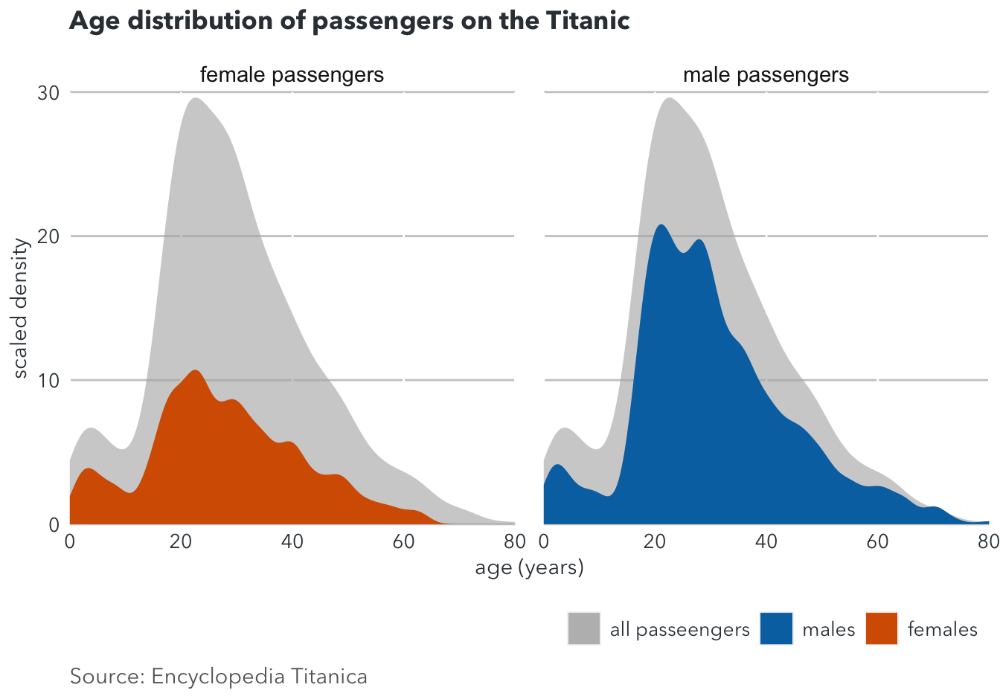
Cows %>%
mutate (breed = as.character(breed)) %>%
filter(breed != "Canadian") -> cows_filtered
# compute densities for sepal lengths
cows_dens <- group_by(cows_filtered, breed) %>%
do(ggplot2:::compute_density(.$butterfat, NULL)) %>%
rename(butterfat = x)
# get the maximum values
cows_max <-filter(cows_dens, density == max(density)) %>%
ungroup() %>%
mutate(
hjust = c(0, 0, 0, 0),
vjust = c(0, 0, 0, 0),
nudge_x = c(-0.2, -0.2, 0.1, 0.23),
nudge_y = c(0.03, 0.03, -0.2, -0.06))
ggplot(cows_dens, aes(x = butterfat, y = density, color = breed, fill = breed)) +
geom_density_line(stat = "identity") +
geom_text(
data = cows_max,
aes(
label = breed, hjust = hjust, vjust = vjust,
color = breed,
x = butterfat + nudge_x,
y = density + nudge_y,
family = font,
size = 11
),
inherit.aes = FALSE,
size = 12/.pt
) +
scale_color_manual(
values = darken(c("#56B4E9", "#E69F00", "#D55E00", "#009E73"), 0.3),
breaks = c("Ayrshire", "Guernsey", "Holstein-Friesian", "Jersey"),
guide = "none"
) +
scale_fill_manual(
values = c("#56B4E950", "#E69F0050", "#D55E0050", "#009E7350"),
breaks = c("Ayrshire", "Guernsey", "Holstein-Friesian", "Jersey"),
guide = "none"
) +
scale_x_continuous(
expand = c(0, 0),
labels = scales::percent_format(accuracy = 1, scale = 1),
name = "butterfat contents"
) +
scale_y_continuous(limits = c(0, 1.99), expand = c(0, 0)) +
coord_cartesian(clip = "off") +
labs(
caption = "Source: Canadian Record of Performance for Purebred Dairy Cattle",
title = "Butterfat percentage in the milk of four cattle breeds") +
theme(
panel.background = element_blank(),
panel.grid.major.y = element_line(color = "#cbcbcb", size = 0.5),
axis.ticks = element_blank(),
axis.text = element_text(family = font, color = text_color, size = 11),
axis.title = element_text(family = font, color = text_color, size = 11),
plot.title = element_text(family = font, size = 13, color = text_color, face = "bold", margin = margin(b = 10)),
plot.caption = element_text(family = font, size = 10, color = caption_color, hjust = 0))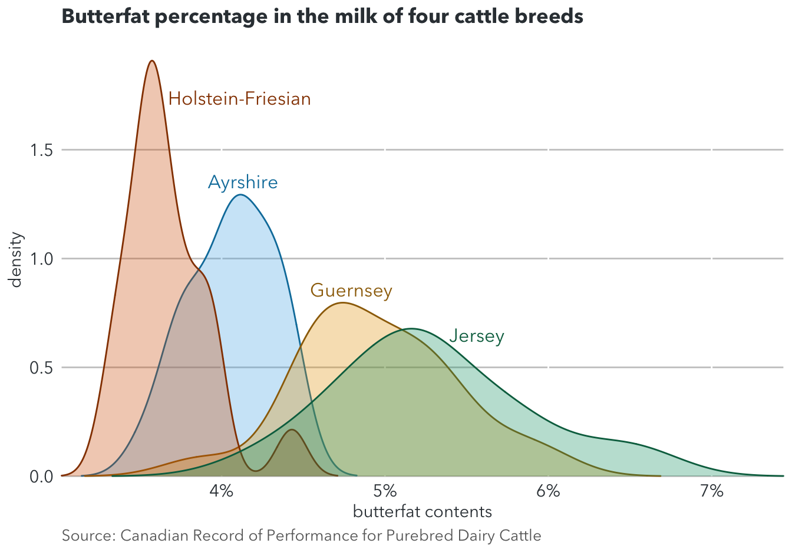
data(BlueJays)
ggplot (BlueJays, aes(x = Mass, y = Head, fill = KnownSex)) +
geom_point(pch = 21, color = "white", size = 2.5) +
scale_x_continuous(name = "body mass (g)") +
scale_y_continuous(name = "head length (mm)") +
scale_fill_manual(
values = c(F = "#D55E00", M = "#0072B2"),
breaks = c("F", "M"),
labels = c("female birds", "male birds"),
name = NULL,
guide = guide_legend(
direction = "horizontal",
override.aes = list(size = 3))) +
labs(
caption = "Source: Keith Tarvin, Oberlin College",
title = "Head length versus body mass for 123 blue jays") +
theme(
axis.ticks = element_blank(),
axis.text = element_text(family = font, size = 11, color = text_color),
axis.title = element_text(family = font, size = 11, color = text_color),
panel.background = element_rect(fill = "white"),
panel.grid.major = element_line(color = "#cbcbcb", size = 0.3),
axis.title.x = element_text(margin = margin (t = 10)),
plot.title = element_text(family = font, color = text_color, size = 15, face = "bold", margin = margin(b = 20)),
plot.caption = element_text(family = font, color = caption_color, size = 9, hjust = 0, vjust = 2),
legend.position = "top",
legend.justification = "right",
legend.box.spacing = unit(3.5, "pt"), #distance between legend and plot
legend.text = element_text(family = font, color = text_color, vjust = 0.6),
legend.spacing.x = unit(2, "pt"),
legend.background = element_rect(fill = "white", color = "white"),
legend.key.width = unit(10, "pt"),
legend.key = element_blank())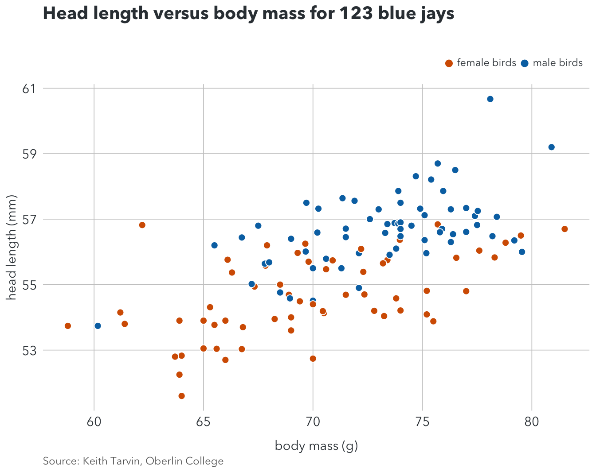
bj_matrix <- BlueJays %>%
dplyr::select(BirdID, KnownSex, Head, Mass, Skull) %>%
gather(var_x, val_x, Head:Skull) %>%
left_join(dplyr::select(BlueJays, BirdID, Head, Mass, Skull)) %>%
gather(var_y, val_y, Head:Skull)
labels <- c(
Head = "head length (mm)",
Mass = "body mass (g)",
Skull = "skull size (mm)"
)
ggplot (bj_matrix, aes(x = val_x, y = val_y, fill = KnownSex)) +
geom_point(pch = 21, color = "white", size = 2, stroke = 0.2) +
scale_x_continuous(
expand_scale(mult = 0.1),
breaks = scales::pretty_breaks(4, min.n = 3)) +
scale_y_continuous(
expand_scale(mult = 0.1),
breaks = scales::pretty_breaks(4, min.n = 3)) +
scale_fill_manual(
values = c(F = "#D55E00", M = "#0072B2"),
breaks = c("F", "M"),
labels = c("female birds", "male birds"),
name = NULL,
guide = guide_legend(
direction = "horizontal",
override.aes = list(size = 2.5))) +
labs(
caption = "Source: Keith Tarvin, Oberlin College",
title = "All-against-all scattereplot for 123 blue jays",
x = NULL,
y = NULL) +
facet_grid(
var_y ~ var_x,
scales = "free",
switch = "both",
labeller = labeller(
var_x = labels,
var_y = labels
)
) +
coord_cartesian(clip = "off") +
panel_border(colour = "grey85", size = 0.4) +
theme(
axis.ticks = element_blank(),
axis.text = element_text(family = font, size = 10, color = text_color),
axis.title = element_blank(),
panel.background = element_rect(fill = "white"),
panel.grid.major = element_line(color = "#cbcbcb", size = 0.5),
plot.title = element_text(family = font, color = text_color, size = 14, face = "bold", margin = margin(b = 10)),
plot.caption = element_text(family = font, color = caption_color, size = 9, hjust = 0, vjust = 2, margin = margin(t = 20)),
legend.position = "top",
legend.justification = "right",
legend.box.spacing = grid::unit(1, "pt"), #distance between legend and plot
legend.text = element_text(family = font, color = text_color, vjust = 0.6),
legend.spacing.x = unit(2, "pt"),
legend.background = element_rect(fill = "white", color = "white"),
legend.key.width = unit(10, "pt"),
legend.key = element_blank(),
strip.background = element_blank(),
strip.placement = "outside",
strip.text.x = element_text(family = font, color = text_color, vjust = 1, margin = margin(0,0,0,0)),
strip.text.y = element_text(family = font, color = text_color, vjust = 0, angle = -90, margin = margin(0,3.5,0,0))
)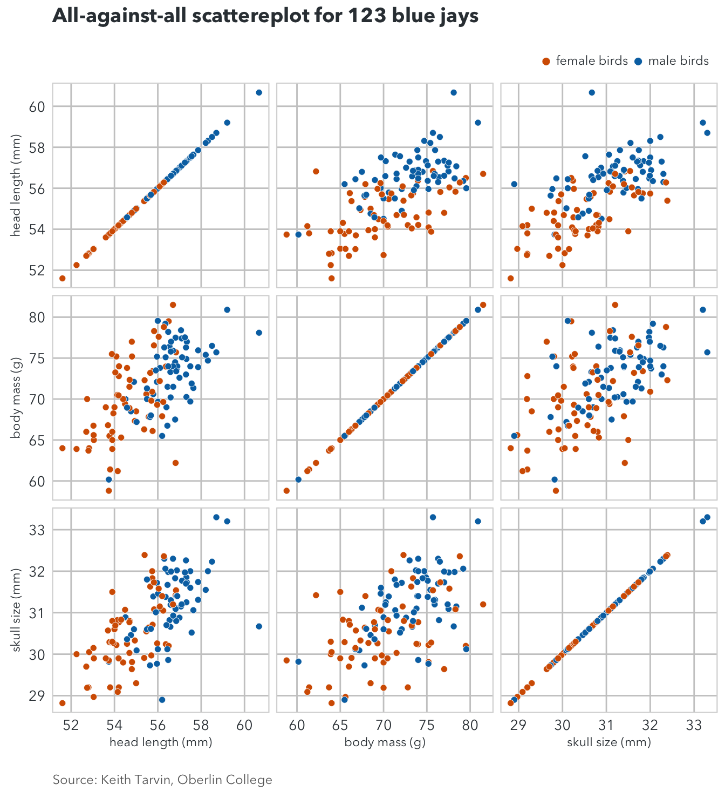
BlueJays$sex <- ifelse(BlueJays$KnownSex == "F", "female birds", "male birds")
BlueJays$sex <- factor(BlueJays$sex, levels = c("female birds", "male birds"))
ggplot (BlueJays, aes(x = Mass, y = Head, fill = KnownSex, size = Skull)) +
geom_point(pch = 21, color = "white") +
facet_wrap(~sex, ncol = 2, scales = "fixed")+
scale_x_continuous(name = "body mass (g)") +
scale_y_continuous(name = "head length (mm)", breaks = c(52, 54, 56, 58, 60)) +
scale_fill_manual(
values = c(F = "#D55E00", M = "#0072B2"),
breaks = c("F", "M"),
labels = c("female birds", "male birds"),
name = NULL,
guide = "none") +
scale_radius(
name = "skull size (mm)",
range = c(2, 7),
limits = c(28, 34),
breaks = c(28, 30, 32, 34),
labels = c("28 ", "30 ", "32 ", "34"),
guide = guide_legend(
direction = "horizontal",
title.position = "top",
title.hjust = 0.5,
label.position = "right",
override.aes = list(fill = "gray40"))) +
labs(
caption = "Source: Keith Tarvin, Oberlin College",
title = "Bubble chart for 123 blue jays",
x = NULL,
y = NULL) +
theme(
panel.background = element_rect(fill = "white"),
panel.grid.major = element_line(color = "#cbcbcb", size = 0.5),
axis.ticks = element_blank(),
axis.text = element_text(family = font, size = 10, color = text_color),
axis.title = element_text(family = font, size = 10, color = text_color),
axis.title.x = element_text(margin = margin (t = 10)),
legend.position = c(1, 0),
legend.justification = c(1,0),
legend.spacing.x = unit(2, "pt"),
legend.spacing.y = unit(2, "pt"),
legend.text = element_text(family = font, color = text_color, size = 10, vjust = 0.6),
legend.title = element_text(family = font, color = text_color, size = 10),
legend.background = element_rect(fill = "white", color = "white"),
legend.key.width = unit(5, "pt"),
legend.key = element_blank(),
strip.text = element_text(family = font, color = text_color, size = 10, margin = margin(2, 0, 2, 0)),
strip.background = element_rect(
fill = "grey85", colour = "grey85",
linetype = 1, size = 0.25),
plot.title = element_text(family = font, color = text_color, size = 14, face = "bold", margin = margin(b = 10)),
plot.caption = element_text(family = font, color = caption_color, size = 9, hjust = 0, vjust = 2, margin = margin(t = 10)))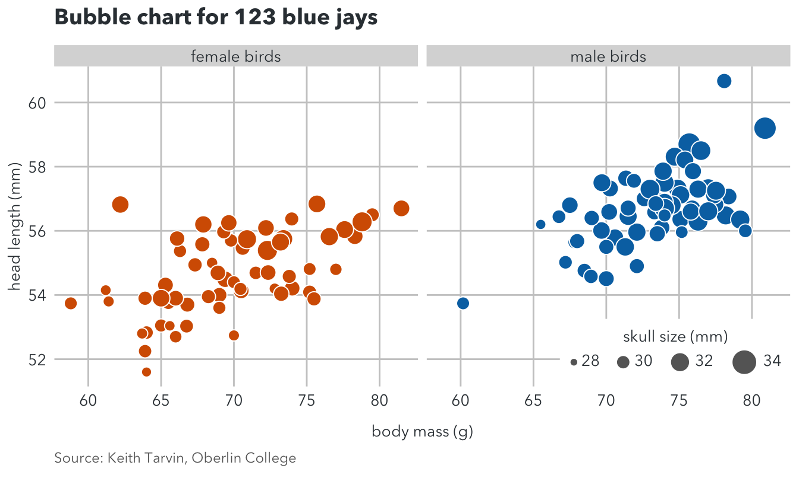
data <- cor(mtcars[,1:7])
corre <- melt(data)
ggplot(filter(corre, as.integer(Var1) < as.integer(Var2)), aes(Var1, Var2, fill = value)) +
geom_tile(color = "white", size = 1) +
scale_x_discrete(position = "top", name = NULL, expand = c(0, 0)) +
scale_y_discrete(name = NULL, expand = c(0, 0)) +
scale_fill_continuous_divergingx(
palette = "Tropic", rev = FALSE,
limits = c(-0.9, 0.91),
breaks = c(-0.9, 0, 0.9),
labels = c("–0.9", "0", "0.9"),
name = "correlation",
guide = guide_colorbar(
direction = "horizontal",
label.position = "bottom",
title.position = "top",
barwidth = grid::unit(140, "pt"),
barheight = grid::unit(17.5, "pt"),
ticks.linewidth = 1
)
) +
coord_fixed() +
labs(
caption = "Source: mtcars",
title = "Correlation in automobile aspects") +
theme(
panel.background = element_blank(),
axis.text = element_text(family = font, color = text_color, size = 11),
axis.line = element_blank(),
axis.ticks = element_blank(),
axis.ticks.length = grid::unit(3, "pt"),
legend.position = c(.97, .0),
legend.justification = c(1, 0),
legend.title.align = 0.5,
legend.text = element_text(family = font, color = text_color, size = 11),
legend.title = element_text(family = font, color = text_color, size = 11),
plot.title = element_text(family = font, size = 13, color = text_color, face = "bold", margin = margin(b = 10)),
plot.caption = element_text(family = font, size = 10, color = caption_color, hjust = 0)
)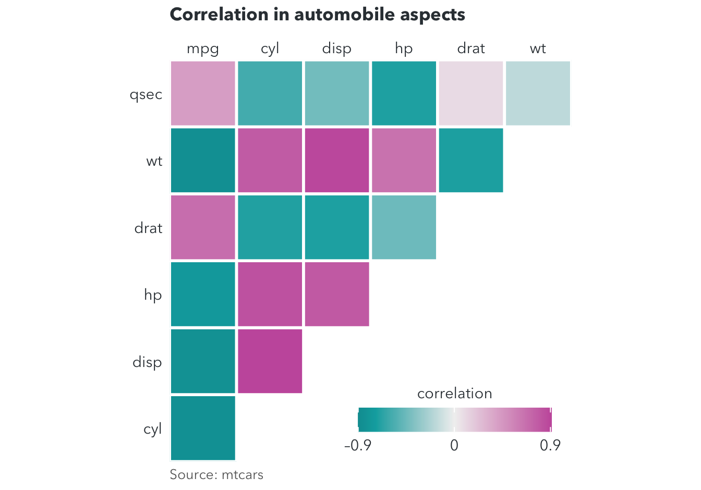
ggplot(filter(corre, as.integer(Var1) < as.integer(Var2)), aes(Var1, Var2, fill = value, size = abs(value))) +
geom_point(shape = 21, stroke = 0) +
scale_x_discrete(position = "top", name = NULL, expand = c(0, 0.5)) +
scale_y_discrete(name = NULL, expand = c(0, 0.5)) +
scale_size_area(max_size = 19, limits = c(0, 0.91), guide = "none")+
scale_fill_continuous_divergingx(
palette = "PuOr", rev = FALSE,
limits = c(-0.9, 0.91),
breaks = c(-0.9, 0, 0.9),
labels = c("–0.9", "0", "0.9"),
name = "correlation",
guide = guide_colorbar(
direction = "horizontal",
label.position = "bottom",
title.position = "top",
barwidth = grid::unit(140, "pt"),
barheight = grid::unit(17.5, "pt"),
ticks.linewidth = 1
)
) +
coord_fixed() +
labs(
caption = "Source: mtcars",
title = "Correlation in automobile aspects",
subtitle = "The size of circles denotes the magnitude of each correlation") +
theme(
panel.background = element_blank(),
axis.text = element_text(family = font, color = text_color, size = 11),
axis.line = element_blank(),
axis.ticks = element_blank(),
axis.ticks.length = grid::unit(3, "pt"),
legend.position = c(.97, .0),
legend.justification = c(1, 0),
legend.title.align = 0.5,
legend.text = element_text(family = font, color = text_color, size = 11),
legend.title = element_text(family = font, color = text_color, size = 11),
plot.title = element_text(family = font, size = 13, color = text_color, face = "bold"),
plot.subtitle = element_text(family = font, size = 11, color = text_color, hjust = 0),
plot.caption = element_text(family = font, size = 10, color = caption_color, hjust = 0)
)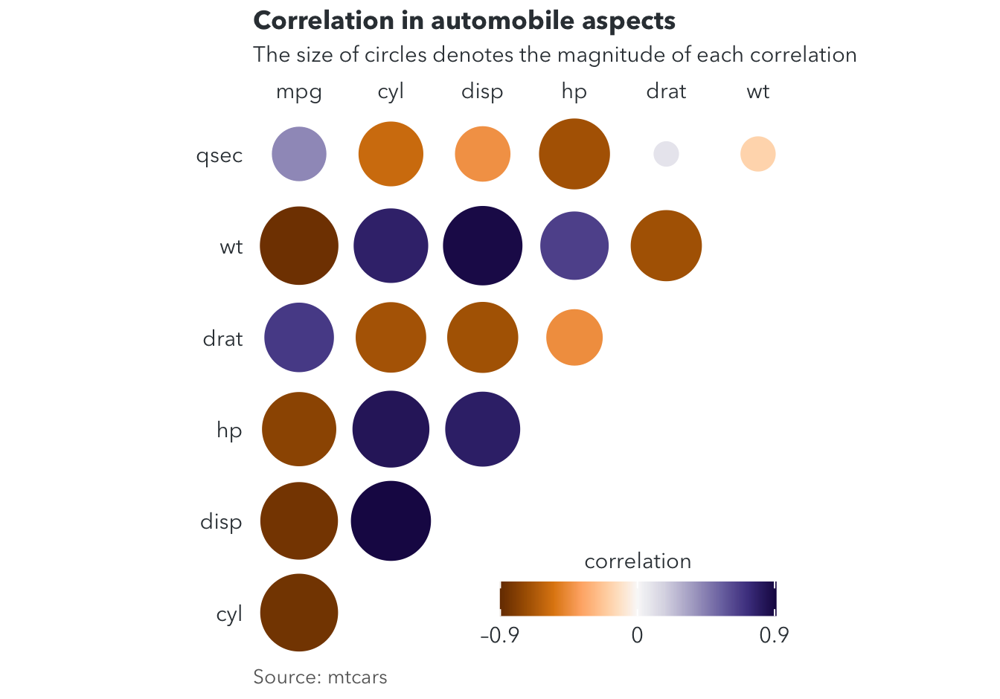
co2_emissions <- read.csv("/Users/huvi/Desktop/datasets/annual-co2-emissions-per-country.csv", sep= ",")
emissions_data <- co2_emissions %>%
dplyr::select(country = Entity, year = Year, co2 = Annual.CO2.emissions) %>%
mutate(co2 = co2/1000000, year = as.numeric(year)) %>%
filter(
country %in% c("Trinidad and Tobago", "Qatar", "United Arab Emirates", "Oman", "Bahrain", "Singapore", "Netherlands", "Kazakhstan", "Equatorial Guinea", "Kuwait"),
year %in% c(2000, 2005, 2010))
labels <-
tibble(filter(emissions_data, year == 2010))
labels$nudge = c(.1, .1, .1, .1, .1, -4, .1, 3, 4, .1)
ggplot(filter(emissions_data, year != 2005), aes(x = year, y = co2)) +
geom_line(aes(group = country), color = "gray60") +
geom_point(color = "white", size = 3) +
geom_point(color = "#0072B2", size = 2) +
geom_text(
data = labels,
aes(
x = 2010 + 0.45,
y = co2 + nudge,
label = country
),
family = font,
size = 10/.pt,
hjust = 0
) +
scale_x_continuous(
limits = c(2000, 2020),
breaks = c(2000, 2010),
labels = c("2000", "2010"),
expand = expand_scale(add = c(1, 0)),
name = NULL,
position = "top"
) +
scale_y_continuous(
limits = c(-2, 260),
expand = c(0, 0),
name = parse(text = "`CO`[2]*` emissions (tons / person)`")
) +
labs(
caption = "Source: World Bank",
title = "CO2 emissions per persion in 2000 and 2010 for 10 countries") +
theme(
panel.background = element_blank(),
axis.line.x = element_blank(),
axis.ticks.x = element_blank(),
axis.text.x = element_text(family = font, size = 11, color = text_color),
axis.title.y = element_text(family = font, size = 11, color = text_color),
axis.text.y = element_text(family = font, size = 11, color = text_color),
axis.line.y.left = element_line(color = text_color),
plot.title = element_text(family = font, size = 14, color = text_color, face = "bold", margin = margin(b = 10), hjust = -0.1 ),
plot.caption = element_text(family = font, size = 10, color = caption_color, margin = margin(t = 10), hjust = -0.06)
)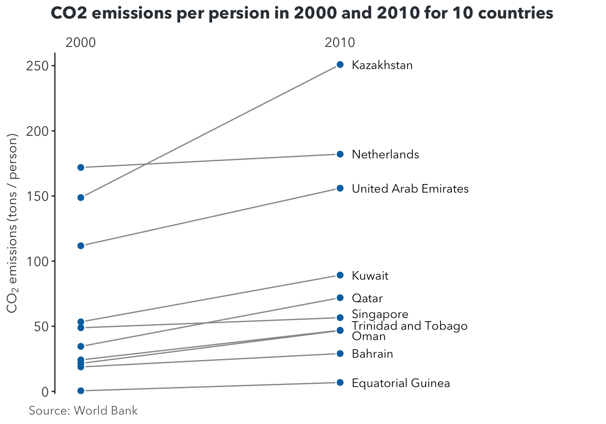
ggplot(emissions_data, aes(x = year, y = co2)) +
geom_line(aes(group = country), color = "gray60") +
geom_point(color = "white", size = 3) +
geom_point(color = "#0072B2", size = 2) +
geom_text(
data = labels,
aes(
x = 2010 + 0.45,
y = co2 + nudge,
label = country
),
family = font,
size = 10/.pt,
hjust = 0
) +
scale_x_continuous(
limits = c(2000, 2020),
breaks = c(2000, 2005, 2010),
labels = c("2000", "2005", "2010"),
expand = expand_scale(add = c(1, 0)),
name = NULL,
position = "top"
) +
scale_y_continuous(
limits = c(-2, 260),
expand = c(0, 0),
name = parse(text = "`CO`[2]*` emissions (tons / person)`")
) +
labs(
#caption = "Source: World Bank",
#title = "CO2 emissions per persion from 2000 to 2010 for 10 countries"
) +
theme(
panel.background = element_blank(),
axis.line.x = element_blank(),
axis.ticks.x = element_blank(),
axis.text.x = element_text(family = font, size = 11, color = text_color),
axis.title.y = element_text(family = font, size = 11, color = text_color),
axis.text.y = element_text(family = font, size = 11, color = text_color),
axis.line.y.left = element_line(color = text_color),
plot.title = element_text(family = font, size = 14, color = text_color, face = "bold", margin = margin(b = 10), hjust = -0.2),
plot.caption = element_text(family = font, size = 10, color = caption_color, margin = margin(t = 10), hjust = -0.06)
)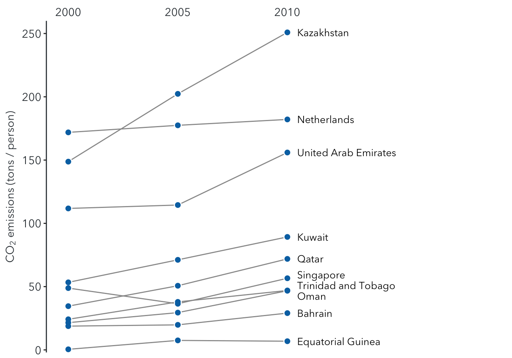
data <- data.frame(
names = c("China", "India", "USA", "Other countries"),
vals = c(14, 14, 3, 43)
)
waffle(
data,
rows = 6,
colors = c("#8dd3c7", "#80b1d3", "#fdb462", "#fb8072"),
xlab = "1 square = 10 million people",
title = "Word population in 2021")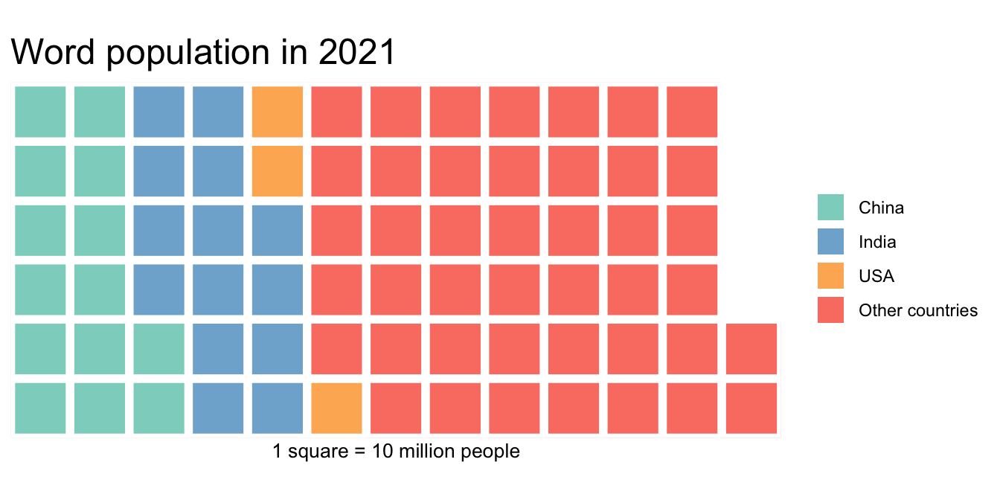
# Create Data
data <- data.frame(
group=LETTERS[1:5],
value=c(13,7,9,21,2)
)
data <- data %>%
arrange(value) %>%
mutate(
total = sum(value),
end_angle = 2*pi*cumsum(value)/total, #ending angle for each pie slice
start_angle = lag(end_angle, default = 0), #starting angle for each pie slice
mid_angle = 0.5*(start_angle + end_angle), #middle angle for each pie slice, for text label
hjust = ifelse(mid_angle > pi, 1, 0),
vjust = ifelse(mid_angle<pi/2 | mid_angle>3*pi/2, 0, 1)
)
rpie = 1
rlabel = 1.05*rpie
ggplot(data) +
geom_arc_bar(
aes(
x0 = 0, y0 = 0, r0 = 0, r = rpie,
start = start_angle, end = end_angle, fill = group
),
color = "white",
size = 0.5
) +
geom_text( #label each pie
aes(
x = rlabel*sin(mid_angle),
y = rlabel*cos(mid_angle),
label = group,
hjust = hjust, vjust = vjust
),
family = font, size = 7
) +
geom_text(#label value of each pie
aes(
x = 0.6*sin(mid_angle),
y = 0.6*cos(mid_angle),
label = value
),
family = font, size = 7
) +
coord_fixed(clip = "off") +
scale_x_continuous(
expand = c(0, 0),
name = "",
breaks = NULL,
labels = NULL
) +
scale_y_continuous(
expand = c(0, 0),
name = "",
breaks = NULL,
labels = NULL
) +
scale_fill_manual(
values = c("#7fc97f", "#beaed4", "#fdc086", "#ffff99", "#386cb0")
) +
theme(
panel.background = element_blank(),
legend.position = "none",
plot.margin = margin(t = 20, r = 20)
)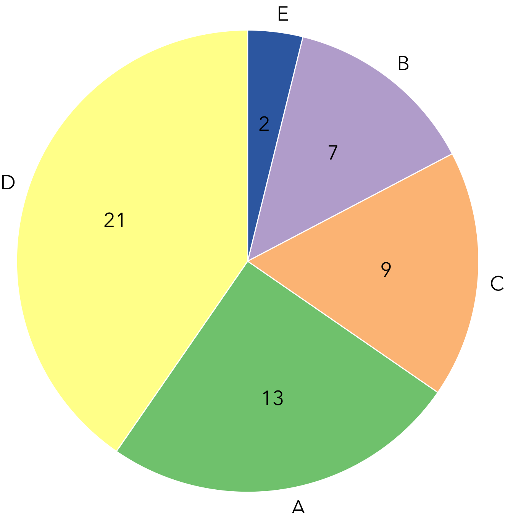
data <- data.frame(
category=c("A", "B", "C"),
count=c(10, 60, 30)
)
# Compute percentages
data$fraction = data$count / sum(data$count)
# Compute the cumulative percentages (top of each rectangle)
data$ymax = cumsum(data$fraction)
# Compute the bottom of each rectangle
data$ymin = c(0, head(data$ymax, n=-1))
# Compute label position
data$labelPosition <- (data$ymax + data$ymin) / 2
# Compute a good label
data$label <- paste0(data$category, "\n value: ", data$count)
# Make the plot
ggplot(data, aes(ymax=ymax, ymin=ymin, xmax=4, xmin=3, fill=category)) +
geom_rect() +
coord_polar(theta="y") + # Try to remove that to understand how the chart is built
xlim(c(2, 4)) + # Try to remove that to see how to make a pie chart
geom_label(x = 3.5, aes(y = labelPosition, label = label), size = 6, family = font) +
scale_fill_manual(
values = c("#66c2a5", "#fc8d62", "#8da0cb")
) +
theme(
panel.background = element_blank(),
axis.ticks = element_blank(),
axis.text = element_blank(),
legend.position = "none",
plot.margin = margin(t = 20, r = 20)
)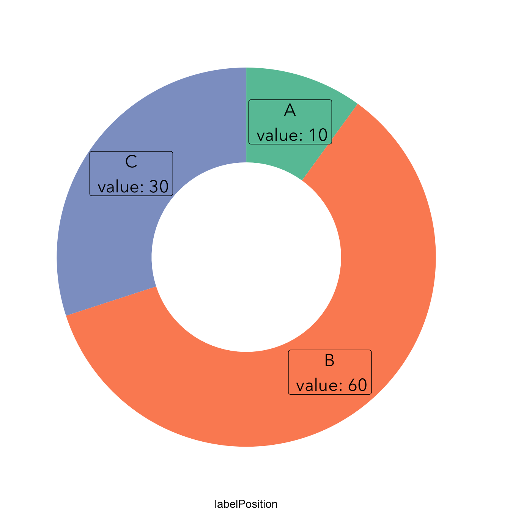
colNames<-c("IDENTIF","RIVER","LOCATION","ERECTED","PURPOSE","LENGTH","LANES","CLEAR-G","T-OR-D","MATERIAL","SPAN","REL-L","TYPE")
bridge <- read.csv("/Users/huvi/Desktop/datasets/bridges.data.version.csv", col.names = colNames, na.strings=c("NA", "-", "?"," "))%>%
dplyr::select(ERECTED, material = MATERIAL) %>%
mutate(
erected = case_when(
ERECTED < 1870 ~ "craft",
ERECTED >= 1870 & ERECTED <= 1889 ~ "emerging",
ERECTED >= 1890 & ERECTED <= 1939 ~ "mature",
ERECTED > 1940 ~ "modern"))
bridge %>%
dplyr::select(material, erected) %>%
table() %>%
reshape2::melt() %>%
dplyr::select(material, erected, count = value) %>%
mutate(
material = case_when(
material == "IRON" ~ "iron",
material == "STEEL" ~ "steel",
material == "WOOD" ~ "wood")
) %>%
group_by(erected)%>%
mutate(group_count = sum(count))-> bridges_tidy
labels_df <- group_by(bridges_tidy, erected) %>%
filter(count != 0) %>%
arrange(desc(material)) %>%
mutate(
y = (cumsum(count) - 0.5*count)/group_count,
y = ifelse(
erected == "mature" & material == "wood", NA, y
)
)
ggplot(bridges_tidy) +
aes(x = erected, y = count, width = group_count, fill = material) +
geom_bar(stat = "identity", position = "fill", colour = "white", size = 1) +
facet_grid(~erected, scales = "free_x", space = "free_x") +
geom_text(
data = labels_df,
aes(y = y, label = count, color = material),
na.rm = TRUE,
size = 12/.pt,
family = font
) +
scale_y_continuous(
name = NULL) +
scale_x_discrete(
name = NULL) +
scale_fill_manual(
values = c("#D55E00D0", "#0072B2D0", "#009E73D0")
) +
scale_color_manual(
values = c(iron = "white", wood = "white", steel = "white")
) +
labs( title = "Mosaic plot for 106 bridges in Pittsburgh",
subtitle = "The widths of each rectangle are proportional to the number of bridges built in that area
The heights of each rectangle are proportional to the number of bridges built from that material
Numbers show the counts of bridges in each category",
caption = "Source: Yoram Reich and Steven J. Fenves") +
coord_cartesian(clip = "off") +
theme(
panel.background = element_blank(),
line = element_blank(),
strip.text = element_blank(),
axis.ticks.length = unit(0, "pt"),
axis.text.y = element_blank(),
axis.text.x = element_text(family = font, size = 11, color = text_color),
panel.spacing.x = unit(0, "pt"),
plot.title = element_text(family = font, size = 15, color = text_color, face = "bold"),
plot.subtitle = element_text(family = font, size = 11, color = text_color),
plot.caption = element_text(family = font, size = 10, color = caption_color, hjust = 0, margin = margin(t = 10)),
legend.position = "top",
legend.justification = c(0, 0),
legend.title = element_blank(),
legend.background = element_blank(),
legend.key = element_blank(),
legend.text = element_text(family = font, size = 11, color = text_color),
legend.margin = margin(b = -20, l = -2)
)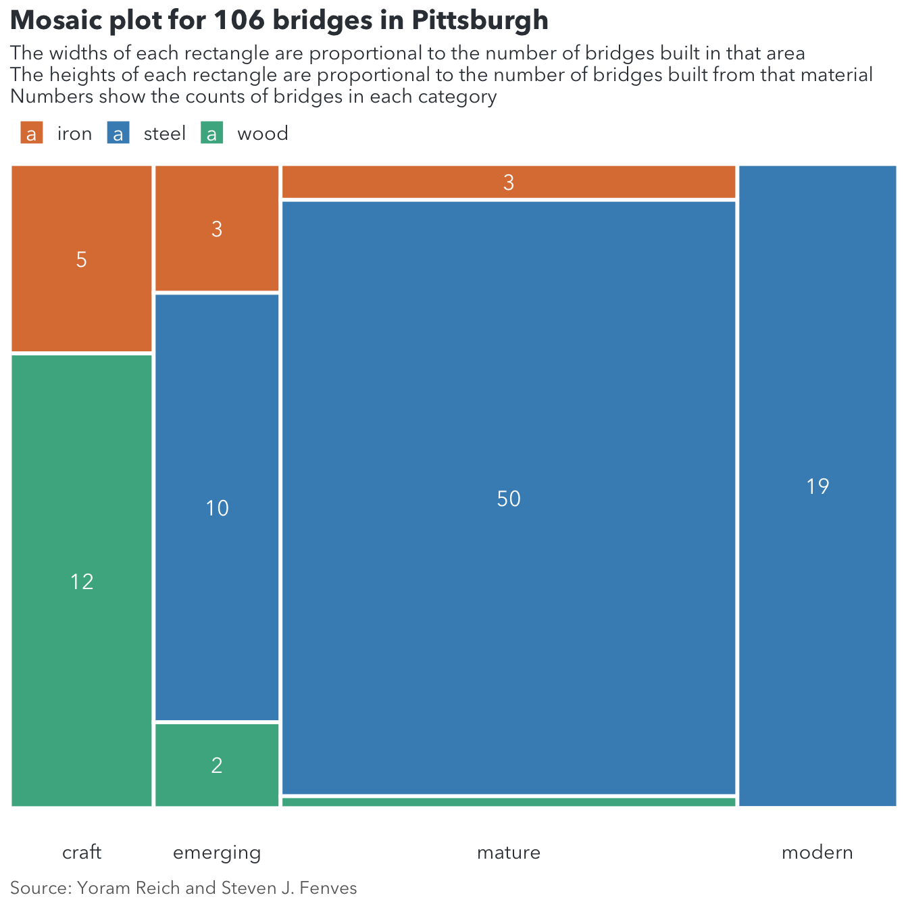
colNames<-c("IDENTIF","RIVER","LOCATION","ERECTED","PURPOSE","LENGTH","LANES","CLEAR-G","T-OR-D","MATERIAL","SPAN","REL-L","TYPE")
bridge <- read.csv("/Users/huvi/Desktop/datasets/bridges.data.version.csv", col.names = colNames, na.strings=c("NA", "-", "?"," "))%>%
dplyr::select(ERECTED, material = MATERIAL) %>%
mutate(
erected = case_when(
ERECTED < 1870 ~ "craft",
ERECTED >= 1870 & ERECTED <= 1889 ~ "emerging",
ERECTED >= 1890 & ERECTED <= 1939 ~ "mature",
ERECTED > 1940 ~ "modern"))
bridge %>%
dplyr::select(material, erected) %>%
table() %>%
reshape2::melt() %>%
dplyr::select(material, erected, count = value) %>%
mutate(
material = case_when(
material == "IRON" ~ "iron",
material == "STEEL" ~ "steel",
material == "WOOD" ~ "wood")
) %>%
group_by(erected)%>%
mutate(group_count = sum(count))-> bridges_tidy
labels_df <- group_by(bridges_tidy, erected) %>%
filter(count != 0) %>%
arrange(desc(material)) %>%
mutate(
y = (cumsum(count) - 0.5*count)/group_count,
y = ifelse(
erected == "mature" & material == "wood", NA, y
)
)
filcols <- c("#D55E00D0", "#0072B2D0", "#009E73D0")
filcols <- c(vapply(filcols, function(x) c(lighten(x, .9), lighten(x, .6), lighten(x, .3), x), character(4)))
ggplot(bridges_tidy, aes(area = count, subgroup = material, fill = interaction(erected, material))) +
geom_treemap(color = "white", size = 0.5*.pt, alpha = NA) +
geom_treemap_subgroup_text(
family = font,
colour = "grey50",
place = "centre", alpha = 0.7,
grow = TRUE
) +
geom_treemap_subgroup_border(color = "white") +
geom_treemap_text(
aes(label = erected, color = interaction(erected, material)),
family = font,
place = "centre",
grow = FALSE
) +
scale_fill_manual(values = filcols) +
scale_color_manual(values = c(
crafts.iron = "black", crafts.steel = "black", crafts.wood = "black",
emerging.iron = "black", emerging.steel = "black", emerging.wood = "black",
mature.iron = "black", mature.steel = "black", mature.wood = "black",
modern.iron = "white", modern.steel = "white", modern.wood = "white")
) +
coord_cartesian(clip = "off") +
guides(colour = "none", fill = "none")+
labs( title = "Treemap plot for 106 bridges in Pittsburgh",
subtitle = "The area of each rectangle is proportional to the number of bridges of that type",
caption = "Source: Yoram Reich and Steven J. Fenves") +
theme(
plot.title = element_text(family = font, size = 15, color = text_color, face = "bold"),
plot.subtitle = element_text(family = font, size = 11, color = text_color),
plot.caption = element_text(family = font, size = 10, color = caption_color, hjust = 0, margin = margin(t = 10))
)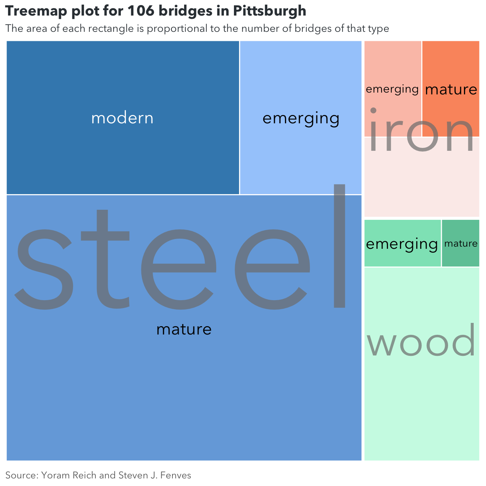
colNames<-c("IDENTIF","RIVER","LOCATION","ERECTED","PURPOSE","LENGTH","LANES","CLEAR-G","T-OR-D","MATERIAL","SPAN","REL-L","TYPE")
bridge <- read.csv("/Users/huvi/Desktop/datasets/bridges.data.version.csv", col.names = colNames, na.strings=c("NA", "-", "?"," "))%>%
mutate(
erected = case_when(
ERECTED < 1870 ~ "CRAFTS",
ERECTED >= 1870 & ERECTED <= 1889 ~ "EMERGING",
ERECTED >= 1890 & ERECTED <= 1939 ~ "MATURE",
ERECTED > 1940 ~ "MODERN"),
length = case_when(
LENGTH < 1500 ~ "SHORT",
ERECTED >= 1500 & ERECTED <= 3000 ~ "MEDIUM",
ERECTED > 3000 ~ "LONG"))
bridge %>%
dplyr::select(material = MATERIAL, erected, river = RIVER, length) %>%
filter(river != "Y") %>%
table() %>%
reshape2::melt() %>%
rename(count = value) %>%
mutate(
material = factor(
case_when(
material == "IRON" ~ "iron",
material == "STEEL" ~ "steel",
material == "WOOD" ~ "wood"
),
levels = c("wood", "steel", "iron")
),
erected = factor(
case_when(
erected == "CRAFTS" ~ "crafts",
erected == "EMERGING" ~ "emerging",
erected == "MATURE" ~ "mature",
erected == "MODERN" ~ "modern"
),
levels = c("modern", "mature", "emerging", "crafts")
),
length = factor(
case_when(
length == "LONG" ~ "long",
length == "MEDIUM" ~ "medium",
length == "SHORT" ~ "short"
),
levels = c("short", "medium", "long")
),
river = factor(
case_when(
river == "A" ~ "Allegheny",
river == "M" ~ "Monongahela",
river == "O" ~ "Ohio"
),
levels = c("Ohio", "Monongahela", "Allegheny")
)
) -> data
data <- gather_set_data(data, 1:4)
data$x <- factor(data$x, levels = c("material", "length", "erected", "river"))
ggplot(data, aes(x, id = id, split = y, value = count)) +
geom_parallel_sets(aes(fill = material), alpha = 0.5, axis.width = 0.13) +
geom_parallel_sets_axes(axis.width = 0.1, fill = "grey80", color = "grey80") +
geom_parallel_sets_labels(
color = 'black',
family = font,
size = 10/.pt,
angle = 90
) +
scale_x_discrete(
name = NULL,
expand = c(0, 0.2)
) +
scale_y_continuous(breaks = NULL, expand = c(0, 0))+
scale_fill_manual(
values = c(iron = "#D55E00D0", wood = "#009E73D0", steel = "#0072B2D0"),
guide = "none"
) +
labs( title = "Parallel sets plot for 106 bridges in Pittsburgh",
subtitle = "The coloring of the bands highlights the construction material of different bridges",
caption = "Source: Yoram Reich and Steven J. Fenves") +
theme(
panel.background = element_blank(),
axis.line = element_blank(),
axis.ticks = element_blank(),
axis.text = element_text(family = font, size = 11, color = text_color),
strip.text = element_text(family = font, size = 11, color = text_color),
plot.margin = margin(14, 1.5, 2, 1.5),
plot.title = element_text(family = font, size = 15, color = text_color, face = "bold", hjust = 0.13),
plot.subtitle = element_text(family = font, size = 11, color = text_color, hjust = 0.22),
plot.caption = element_text(family = font, size = 10, color = caption_color, margin = margin(t = 10, b = 5), hjust = 0.05)
)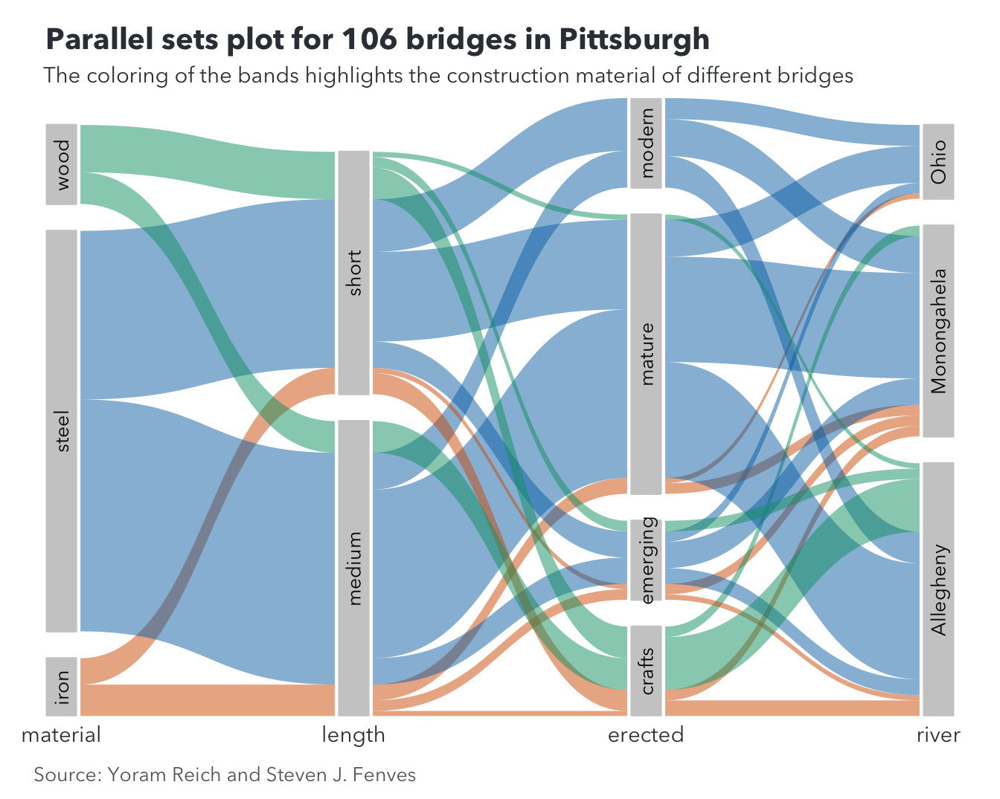
covid <- read.csv("/Users/huvi/Desktop/datasets/owid-covid-data.csv")
ger <- covid %>% filter(iso_code == "DEU") %>%
dplyr::select(date, new_cases_per_million) %>%
mutate(
date = as.Date(date),
MA7 = zoo::rollmean(new_cases_per_million, k = 7, fill = NA))
ggplot(ger, aes(x = date, y = MA7))+
geom_line(color = "#0072B2", size = 0.6)+
scale_y_continuous(
limit = c(0, 350),
expand = c(0, 0),
breaks = c(0, 50, 100, 150, 200, 250, 300),
name = "cases/million people"
) +
scale_x_date(
name = "date"
) +
labs(
caption = "Source: ourworldindata.com",
title = "7-day moving average of new COVID cases in Germany") +
theme(
axis.text = element_text(family = font, size = 11, color = text_color),
axis.title = element_text(family = font, size = 11, color = text_color),
axis.line = element_line(color = text_color, size = 0.4),
panel.background = element_blank(),
panel.grid.major = element_blank(),
axis.title.x = element_text(margin = margin (t = 10)),
plot.title = element_text(family = font, color = text_color, size = 15, face = "bold", margin = margin(b = 20)),
plot.caption = element_text(family = font, color = caption_color, size = 9, hjust = 0, vjust = 2),
)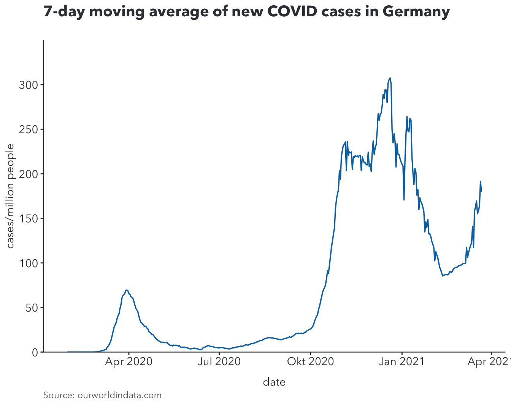
vaccine <- covid %>% filter(location %in% c("United Kingdom", "Germany", "Israel", "United States", "United Arab Emirates", "Canada" )) %>%
dplyr::select(date, location, total_vaccinations_per_hundred) %>%
mutate(
date = as.Date(date)
) %>%
drop_na()
ggplot(vaccine, aes(x = date, y = total_vaccinations_per_hundred, color = location))+
geom_line(size = 0.6)+
scale_y_continuous(
limit = c(0, 125),
expand = c(0, 0),
breaks = c(0, 25, 50, 75, 100, 125),
name = "vaccinations/hundred people"
) +
scale_x_date(
name = "date"
) +
scale_color_manual(
values = c("#e41a1c", "#377eb8", "#4daf4a", "#984ea3", "#ff7f00", "#6a3d9a")
) +
labs(
caption = "Source: ourworldindata.com",
title = "Number of vaccinations per hundred people in 6 countries") +
theme(
axis.text = element_text(family = font, size = 11, color = text_color),
axis.title = element_text(family = font, size = 11, color = text_color),
axis.line = element_line(color = text_color, size = 0.4),
panel.background = element_blank(),
panel.grid.major = element_blank(),
axis.title.x = element_text(margin = margin (t = 10)),
plot.title = element_text(family = font, color = text_color, size = 15, face = "bold", margin = margin(b = 20)),
plot.caption = element_text(family = font, color = caption_color, size = 9, hjust = 0, vjust = 2),
legend.position = "top",
legend.box.spacing = unit(3.5, "pt"), #distance between legend and plot
legend.text = element_text(family = font, color = text_color, vjust = 0.6),
legend.spacing.x = unit(2, "pt"),
legend.background = element_rect(fill = "white", color = "white"),
legend.key.width = unit(10, "pt"),
legend.key = element_blank(),
legend.title = element_blank()
)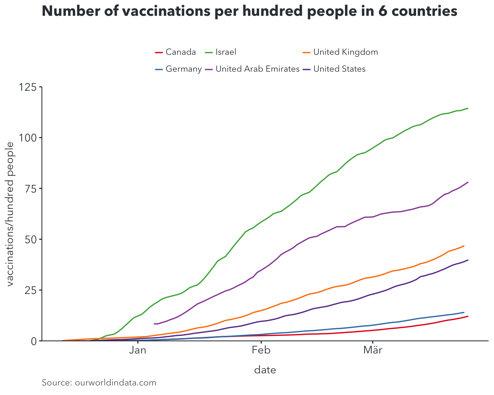
ggplot(ger, aes(x = date, height = MA7, y = 0))+
geom_ridgeline(color = "#0072B2", fill = "#0072B240", size = 0.75)+
scale_y_continuous(
limit = c(0, 350),
expand = c(0, 0),
breaks = c(0, 50, 100, 150, 200, 250, 300),
name = "cases/million people"
) +
scale_x_date(
name = "date"
) +
labs(
caption = "Source: ourworldindata.com",
title = "7-day moving average of new COVID cases in Germany") +
theme(
axis.text = element_text(family = font, size = 11, color = text_color),
axis.title = element_text(family = font, size = 11, color = text_color),
axis.line = element_line(color = text_color, size = 0.4),
panel.background = element_blank(),
panel.grid.major = element_blank(),
axis.title.x = element_text(margin = margin (t = 10)),
plot.title = element_text(family = font, color = text_color, size = 15, face = "bold", margin = margin(b = 20)),
plot.caption = element_text(family = font, color = caption_color, size = 9, hjust = 0, vjust = 2),
)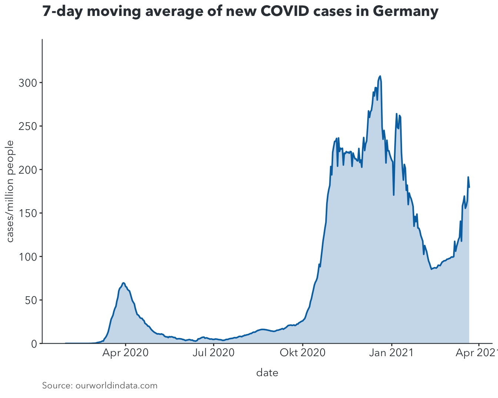